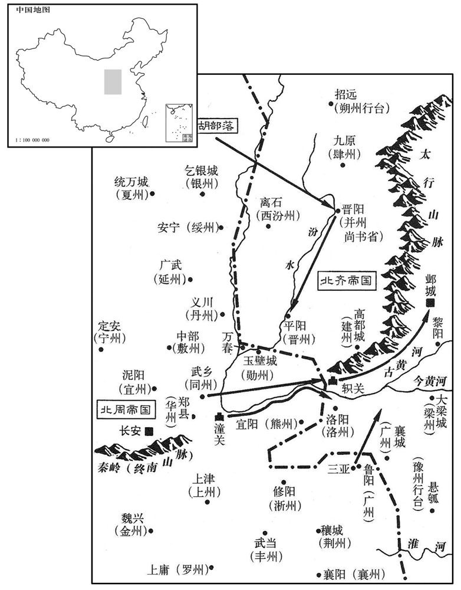
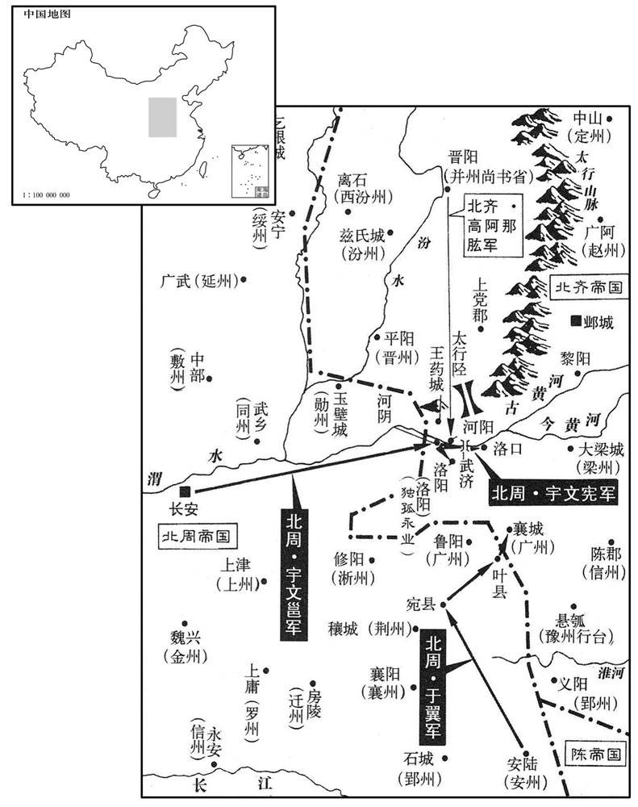

卷次与人物目录 / 卷172
资治通鉴 · 卷第一百七十二【陈纪六】
公元575年至公元576年 · 原文、白话与胡三省注
本页按胡注本编排保存全卷内容。白话采用本站所据译本，未可靠对应的内容另列说明；事件标题用于定位，并非原书文字。
本卷共105段原文，103段有译文对应，2段缺译或待核对。
卷第一百七十二【陈纪六】起旃蒙协洽（乙未），尽柔兆涒滩（丙申），凡二年。
卷首原文与注释
高宗宣皇帝中之上
公元575年 · 陈高宗宣皇帝太建七年
太建七年〔（乙未、五七五）〕
上传原文的注释括号有异常，字符原样保留；无法可靠划分的段落默认全文显示。
本年事件索引（现代整理）
- 陈宣帝祭祀南郊
- 周武帝前往同州
- 陈朝樊毅攻克潼州
- 高纬返回邺城
- 陈宣帝祭祀北郊
- 发生日食
- 樊毅攻克下邳、高栅等六城
- 高纬性格懦弱口吃，沉溺奢侈游乐
- 高纬宠信陆令萱、穆提婆等人，朝政腐败
- 周武帝听从于翼建议，暂缓出兵北齐
- 韦孝宽上疏提出伐齐或养兵待机的三项策略
- 韦孝宽建议分兵消耗北齐并等待其内部衰乱
- 韦孝宽又建议守信养威、等待伐齐时机
- 韦孝宽第三策主张修好养威，等待时机兼并北齐
- 伊娄谦判断北齐政局混乱、斛律光失势，认为易于攻取
- 周武帝返回长安
- 陈宣帝祭祀太庙
- 陈桃根献上青牛和织锦，陈宣帝命将贡品归还或焚毁
- 北齐任阳休之为尚书右仆射
- 陈朝任王玚为左仆射
- 高纬前往晋阳
- 周武帝前往云阳宫
- 杨坚相貌奇特，来和预言其将来会称王
- 宇文宪建议除掉杨坚，来和判断杨坚可镇守一方
- 周武帝返回长安
- 周武帝召集大臣，告知伐齐计划
- 周武帝下诏伐齐，命诸王、将领分路出兵
- 周武帝与群臣议论伐齐路线，分别采纳多项建议
- 周武帝率六万大军直趋河阳
- 北周派使者出使陈朝
- 周军攻入北齐境内并攻下河阴大城，围攻中潬、金墉
- 高阿那肱从晋阳率兵抵御周军，周武帝病重后退兵
- 宇文宪等攻取三十余城，但随后多弃守
- 周武帝返回长安
- 北齐任赵彦深为司徒、斛阿列罗为司空
- 陈朝吴明彻攻彭城，在吕梁击败北齐军
- 北周武帝前往同州
- 陈朝立皇子叔齐、叔文为王
- 出现日食
- 陈朝任王玚、陆缮为尚书仆射
- 北周武帝返回长安
春，正月，辛未，上祀南郊。
春季，正月，辛未（十六日），陈宣帝到南郊祭天。
癸酉，周主如同州。
癸酉（十八日），北周国主去同州。
乙亥，左卫将军樊毅克潼州。〔五代志：下邳郡夏丘县，梁、后齐置潼州，治取虑城。潼，音童。〕
乙亥（二十日），陈朝左卫将军樊毅攻克潼州。
齐主还邺。〔去年二，脐主如晋阳讨思好，寻已还邺。八月，复如晋阳，今还。〕
北齐后主回邺城。
辛巳，上祀北郊。〔陈制亦以间岁正月上辛用特牛一祀天、地于南、北二郊。间岁者，一岁祀南郊，一岁祀北郊也。〕
辛巳（二十六日），陈宣帝到北郊祭地。
二月，丙戌朔，日有食之。
二月，丙戌朔（初一），出现日食。
戊申，樊毅克下邳、高栅等六城。〔地形志，下邳郡有栅渊县，武定八年分宿豫置。栅，楚格翻。〕
戊申（二十三日），陈朝樊毅攻克下邳、高栅等六座城池。
齐主言语涩吶，不喜见朝士，自非宠私昵狎，未尝交语。〔涩，色立翻，不滑顺也。吶，女劣翻，声不出也。赵文子其言吶吶不能出诸口。喜，许既翻。朝，直遥翻。昵，尼质翻。〕性懦，不堪人视，〔所谓弱颜也。懦，乃卧翻，又奴乱翻。〕虽三公、令、录奏事，〔令，尚书令。录，录尚书事。〕莫得仰视，皆略陈大指，惊走而出。承世祖奢泰之余，〔齐主之父，庙号世祖。〕以为帝王当然，后宫皆宝衣玉食，一裙之，费，至直万匹；竞为新巧，朝衣夕弊。〔朝衣，于既翻。〕盛修宫苑，穷极壮丽；所好不常，数毁又复。〔好，呼到翻；下同。数，所角翻。〕百照宫中。〔晋阳宫也。〕每有灾异寇盗，不自贬损，唯多设斋，以为修德。〔后之有天下者，可以鉴矣。〕好自弹琵琶，为无愁之曲，近侍和之者以百数，民间谓之「无愁天子」。〔五代志：帝倚弦而歌，别采新声为无愁曲，音韵窈窕，极于哀思，使胡儿、阉宦辈齐唱和之。曲终乐阕，无不殒涕。虽行幸道路，或时马上奏之。乐往哀来，竟以亡国。和，户卧翻。〕于华林园〔邺都有华林园。华，如字。〕立贫儿村，帝自衣蓝缕之服，行乞其间以为乐。〔衣服穿弊如悬鹑者为蓝缕。衣，于既翻；下人衣同。乐，卢各翻。〕又写筑西鄙诸城，使人衣黑衣攻之，帝自帅内参拒鬬。〔写筑者，写诸城之形而筑以象之。黑衣者，象周之戎衣。内参者，诸阉宦也。帅，读曰率。〕
北齐后主说话迟钝口吃，不喜欢见朝廷的官员，如果不是宠爱亲近的人，从不和别人交谈。性格懦弱，不愿意别人看他，尽管是三公、尚书令、录尚书事等大官向他奏事，不能抬头看他，都是简要地说一些大概情形，便惊恐地离去。后主继承了武成帝奢侈过度的余风，以为这是帝王理所应当的享受，后宫的妃嫔都是锦衣玉食，一条裙子的费用，甚至值一万匹绢帛的价钱；宫人们在衣着的新奇精巧上相互竞赛，早上的新衣服到晚上就被当作旧衣服。大事修建宫室园林，壮丽到了极点；对所喜好的反复无常，屡次毁坏后又重新修复。从事土木建筑的各种工匠，没有一时的休息，夜里点起火把照明工作，天冷时用热水和泥。开凿晋阳的西山建成巨大的佛像，一夜间点燃万盆油灯，灯光可以照到宫中。国家有灾异和寇盗，从不谴责自己，只是多设斋饭向僧徒施舍，以为这才是修行积德。喜欢自己弹琵琶，谱成名叫《无愁》的乐曲，周围跟着唱和的侍从多到上百人，民间百姓称他为“无愁天子”。后主在华林园设立贫儿村，自己穿了破烂的衣服，在村中以行乞为乐趣。又画下西部边境一些城池的图样，依照图样仿造，派人穿了黑衣募仿北周的士兵进攻城池，后主自己率领宫里的太监假装在城里抵抗作战。
宠任陆令萱、穆提婆、高阿那肱、韩长鸾等，宰制朝政，宦官邓长颙、陈德信、胡儿何洪珍等并参预机权，〔朝，直遥翻。颙，鱼容翻。〕各引亲党，超居显位。官由财进，狱以贿成，竞为奸谄，蠹政害民。旧苍头刘桃枝等皆开府封王，其余宦官、胡儿、歌舞人、见鬼人、官奴婢等滥得富贵者，殆将万数，庶姓封王者以百数，开府千余人，仪同无数，领军一时至二十人，侍中、中常侍数十人，乃至狗、马及鹰亦有仪同、郡君之号，有鬬鸡，号开府，皆食其干禄。〔魏、齐官制，凡禄各以品秩为差。官一品每岁禄八百匹，二百匹为一秩。从一品七百匹，一百七十五匹为一秩。三品六百匹，一百五十匹为一秩。从二品五百匹，一百二十五匹为一秩。三品四百匹，一百匹为一秩。从三品三百匹，七十五匹为一秩。四品二百四十匹，六十匹为一秩。从四品二百匹，五千匹为一秩。五品一百六十匹，四十匹为一秩。从五品一百二十匹，三十匹为一秩。六品一百匹，二十五匹为一秩。从六品八十匹，二十匹为一秩。七品六十匹，十五匹为一秩。从七品四十匹，十匹为十秩。八品三十六匹，九匹为一秩。从八品三十二匹，八匹为一秩。九品二十八匹，七匹为一秩。从九品二十四匹，六匹为一秩。禄率一分以帛，一分以粟，一分以钱。干出所，部之人，一干输绢十八匹，干身放之。〕诸嬖幸朝夕吴侍左右，〔嬖，卑义翻，又博计翻。〕一戏之费，动踰巨万。既而府藏空竭，〔藏，徂浪翻。〕乃赐二三郡或六七县，使之卖官取直。由是为守令者，率皆富商大贾，〔守，音狩。贾，音古。〕竞为贪纵，〔【章：十二行本「纵」下有「赋繁役重」四字；乙十一行本同；孔本同；张校同。】〕民不聊生。〔史极言齐氏政乱，以启敌国兼并之心，又一年而齐亡。有天下者，可不以为鉴乎！书名通鉴，岂苟然哉！〕
后主宠信任用陆令萱、穆提婆、高阿那肱、韩长鸾等主宰朝政，宦官邓长、陈德信、胡人何洪珍等都参预机要的权柄，各自引荐亲戚朋党，高居显赫的官位。向他们奉纳钱财可以做官，进行贿赂可以制造冤狱，相互争着对后主欺诈谄媚，败坏朝政祸害百姓。从前是奴仆的刘桃枝等人都开府封王，其他的宦官、胡人、歌舞的艺人、巫师、官府的奴婢等轻易地得到富贵的，大概将近崐上万人，外姓被封王的有上百人，开府的有一千多人，封为仪同的不计其数，领军一时达到二十人，侍中、中常侍有几十人，甚至狗、马、猎鹰等禽兽也有仪同、郡君的封号，有的斗鸡被封为开府，享受相应等级的俸禄。一些受到宠幸的卑鄙小人早晚在后主周围侍候取乐，一次游戏的费用，动辄超过一万。既而国库空竭，便赐给这些人二三个郡或六七个县，让他们出售官爵收取钱财。因此担任守令的，大都是富商大贾，争相贪污放纵，民不聊生。
周高祖谋伐齐，命边镇益储偫，加戍卒；〔偫，直里翻。〕齐人闻之，亦增修守御。柱国于翼谏曰：「疆埸相侵，互有胜负，徒，损兵储，无益大计。不如解严继好，使彼懈而无备，然后乘间，出其不意，〔好，呼到翻。懈，古隘翻。间，古苋翻；下间隙、乘间同。〕一举可取也。」周主从之。
北周武帝计划征讨北齐，下令边镇增加储备，增添防守的士兵；北齐听到这一消息，也增加修整守御点。北周的柱国于翼向北周武帝劝说道：“相互侵犯国界，各有胜负，白白地损失军队和储备，对大计没有益处。不如解除紧急状态保持友好关系，使对方松懈而没有准备，然后寻找机会，出其不意，就能一举而取。”北周武帝听从了他的意见。
韦孝宽上疏陈三策：〔上，时掌翻。〕
韦孝宽上疏武帝陈述三条计策：
其一曰：「臣在边积年，颇见间隙，不因际会，难以成功。难以成功。是以往岁出军，徒有劳费，功绩不立，由失机会。〔周主保定初再伐齐，攻并州，湋洛阳，趣悬瓠，出轵关，皆无功，事见一百六十九卷世祖天嘉四年、五年。争宜阳、争汾北事见一百七十卷太建元年至三年。〕何者﹖长淮之南，旧为沃土，陈氏以亡破亡余烬，犹能一举平之；〔曰「破亡余烬」者，言陈氏承梁元帝江陵破亡之后，收合余烬，再立国于江南。烬，徐刃翻；火余烛余曰烬。〕齐人历年赴救，丧败而返。〔事见上卷五年、六年。丧，息浪翻。〕内离外叛，计尽力穷，雠敌有舋，不可失也。〔左传：鬬伯比曰：「雠有衅，不可失也。」舋，与衅同。宇文、高氏，世为雠敌。〕今大军若出轵关，方轨而进，〔五代志：轵关，在河内郡王屋县。周师若自轵关出险趋邺，前无阻隘，可以方轨横行。〕兼与陈氏共为掎角，〔欲约陈共攻之。左传：譬如捕鹿，晋人角之，诸戎掎之。角者，当其前。掎者，掎其后。掎，居绮翻。〕并令广州义旅出自三嵵，〔魏永安中，置广州于鲁阳。魏分东、西广州，西属三嵵谷，在鲁阳界。〕又募山南骁锐，沿河而下，〔周都长安，以褒、汉、荆、襄为山南。骁，坚尧翻；下同。〕复遣北山稽胡，绝其并、晋之路。〔稽胡，南匈奴之余种，散在河东、西河郡界，阻山而居，在长安北。复，扶又翻。并，卑经翻。〕凡此诸军，仍令各募关、河之外劲勇之士，厚其爵赏，使为前驱，〔关、河之外，指齐境而言，欲募其土人以为乡导。〕岳动川移，雷骇电激，百道俱进，并趋虏庭。〔趋，七喻翻。〕必当望旗奔溃，所向摧殄，不戎大定，寔在此机。」〔武王伐纣，一戎衣而天下大定。〕
第一是：“臣在边地多年，曾见到不少可乘之机，但不及时利用，难以成功。所以往年军队出征，只有劳累耗费，没有树立功绩，都是由于失掉机会。为什么？淮河以南，以前是肥沃的地方，陈氏收拾起梁朝破亡后的残余力量，还能一举将它讨平；齐人每年去那里援救，都遭到失败而归。现在齐国内有离心外有叛乱，计尽力穷，仇敌之间有了破绽，这种机会不能失掉。现在大军如果发兵轵关，两车并行地前进，兼而与陈氏共同夹击敌人，并下令广州的义军从三鸦出兵，另外征募山南的勇猛锐利之士，沿黄河而下，再派遣北山的稽胡，截断对方并州、晋州的通道。以上这些军队，仍旧命令各自征募关、河以外的强壮勇敢之士，给予优厚的爵位和赏赐，派他们作为先驱。山动河移，像雷电般地惊动激烈，从许多道路并头前进，直趋敌人的内庭。敌人一定望旗奔逃溃败，我军所向之处，敌军都会挫败消灭，一次征伐就能使天下大定，确实在于这次机会。”
其二曰：「若国家更为后图，未即大举，宜与陈人分其兵势。三嵵以北，万春以南，〔万春，地名。新唐志：武德五年，析龙门置万春县。盖以旧地名名县也。三嵵以北，万春以南，韦孝宽袤指周东、北庂境，举两端而言。〕广事屯田，预为贮积，〔贮，直吕翻。〕募其骁悍，立为部伍。〔悍，侯旰翻，又下罕翻。〕彼既东南有敌，戎马相持，〔谓齐人与陈人为敌也。〕我出寄兵，破其疆埸。〔埸，音亦。〕彼若兴师赴援，我则坚壁清野，待其去远，还复出师。〔复，扶又翻。〕常以边外之军，引其腹心之众。我无宿舂之费，〔庄子：适百里者佰舂粮。〕彼有奔命之劳，〔左传：申公巫臣遗楚令尹子重、司马子反书曰：「吾必使汝疲于奔命以死。」于是导吴伐楚，子重、子反一岁七奔命。〕一二年中，必自离叛。且齐氏昏暴，政出多门，鬻狱卖官，唯利是视，荒淫酒色，忌害忠良，阖境蔜然，不胜其弊。〔阖，户腊翻。胜，立升。〕以此而观，覆亡可待。然后乘间电扫，事等摧枯。」〔间，古苋翻。〕
第二是：“如果国家进一步为以后谋划，一时还没有大举进攻，最好和陈朝一同分散齐国的兵势。三鸦以北，万春以南一带地方，广为屯田，预先储备军粮，招募勇猛强悍的人组成部队。齐国的东南有陈朝和它为敌，双方的军队对峙，我方派出奇兵，就能突破齐国的国界。对方如果派军队来增援，我们可以坚壁清野，等他们远去以后，重又出兵。我们经常以边界一带的军队，调动对方心腹之间的军事主力。我方不须准备隔夜的粮草，对方却有疲于奔命的劳累，一二年中，对方内部必定出现离心而叛变。况且齐氏昏庸暴虐，政出多门，鬻狱卖官，唯利是图，荒淫酒色，忌害忠良，全国哀号，不胜其弊。由此看来，灭亡指日可待。然后寻找空隙发起迅雷不及掩耳的攻击，等于摧枯拉朽，腐朽的敌人很容易被打垮。”
其三曰：「昔句践亡吴，尚期十载；〔左传：伍员曰：「越十年生聚，十年教训，二十年之外，吴其为沼乎！」此言十载，以教训言之也。句，音钩。践，慈演翻。载，作亥翻。〕武王取纣，犹烦再举。〔史记：武王三年丧毕，观兵孟津，诸侯不期而会者八百，皆曰「纣可伐。」武王曰：「汝未知天命。」乃还师。三年，纣淫暴日甚。武王告诸侯曰：「殷有重罪，不可不伐。」遂复伐纣，灭之。〕今若更存遵养，〔诗周颂：于铄王师，遵养时晦。毛传云：遵，率；养，取；晦，昧也。郑笺云：文王率殷庂叛国以事纣，养是晦昧之君老其恶。自是说者悉祖其义，故云然。〕且复相时，左传：相时而动，无累后人。复，扶又翻。相，息亮翻。〕臣谓宜还崇邻好，申其盟约，安民和众，通商惠工蓄锐养威，观衅而动。斯乃长策远驭，坐自兼并也。」〔好，呼到翻。通商惠工，左传语。自古以来，谋臣智士，陈三策者，其上策率非常人所能行，中策亦必度其才足以行之，然后能听而用之通鉴盖谓于翼、韦孝宽所见略同也。〕
两版字句有差异，建议核对原文。
第三是：“古代的勾践要灭亡吴国，尚且为期十年，周武王征讨商纣，还曾再次出兵。现在如果能在乱世暂时退隐，等待时机，臣认为应当重新表示尊重友邻，重申盟约，安抚百姓和睦大众，互通贸易优惠工匠，养精蓄锐增加声威，等待机会而行动，这好比是用长长的马鞭远远地驾驭拉车的马匹，可以坐待兼并对方。”
书奏，周主引开府仪同三司伊娄谦入内殿，〔伊娄，虏复姓。拓跋欴兴于代北也，献帝以其次弟为伊娄氏。〕从容谓曰：「朕欲用兵，何者为先﹖」对曰：「齐氏沈溺倡优，耽昏曲蘗。〔从，七容翻。沈，持林翻。倡，音昌。蘗，鱼列翻。〕其折冲之将斛律明月，已毙于谗口。〔事见上卷四年。将，即亮翻。〕上下离心，道路以目。〔道路以自，本周语，言道路以目相视而不敢言。〕此易取也。」〔易，以豉翻。〕帝大笑。〔喜其所见与己同。〕三月，丙辰，使谦与小司寇元卫聘于齐以观衅。〔为周灭齐张本。考异曰：谦传作「拓跋伟」，今从周书帝纪。余按：伊娄与拓跋同所自出而各为氏，则伊娄谦本传作「拓跋」不为无据。〕
韦孝宽的奏书呈上以后，北周君主把开府仪同三司伊娄谦召进内殿，从容地问他：“朕要用兵，以谁为最先的对象？”伊娄谦答道：“齐国的执政者沉缅在欣赏歌舞杂耍之中，酷嗜饮酒。他们冲锋陷阵的勇将斛律明月，已经死在谗言之中。上下离心离德，百性慑于暴政，在路上相见时不敢交谈，只能以目示意。这是最容易攻取的。”武帝大笑。三月，丙辰（初二），派伊娄谦和小司寇元卫访问北齐，借此观察有什么可以利用的机会。

丙寅，周主还长安。〔自周州还。还，从宣翻，又音如字。〕
丙寅（十二月），北周国主回长安。
夏，四月，甲午，上享太庙。
夏季，四月，甲午（初十），陈宣帝到太庙祭祀。
监豫州陈桃根得青牛，献之，〔监，工衔翻。〕诏遣还民。又表上织成罗文锦被各二百首，〔上，时掌翻。〕诏于云龙门外焚之。
陈朝的监豫州陈桃根得到青牛，献给皇帝，宣帝下诏还给百姓。陈桃根又上表献上丝织的罗纹锦被两种各二百件，宣帝下诏在云龙门外将锦被全部焚毁。
庚子，齐以中书监阳休之为尚书右仆射。
庚子（十六日），北齐任命中书监阳休之为尚书右仆射。
六月，壬辰，以尚书右仆射王玚为左仆射。〔玚，雉杏翻，又音畅。〕
六月，壬辰（初九），陈朝任命尚书右仆射王为左仆射。
甲戌，齐主如晋阳。
甲戌（疑误），北齐后主去晋阳。
秋，七月，丙戌，周主如云阳宫。
秋季，七月，丙戌（疑误），北周国主去云阳宫。
太将军杨坚姿相奇伟。〔坚为人龙颜，额有五柱入顶，目光外射，有文在手曰「王」。长上短下，沈深严重。相，息亮翻；下同。〕畿伯下大夫长安来和〔畿伯，周置，属大司徒。杜佑曰：周地之属，每方畿伯，中大夫也；每县小畿伯，则下大夫。〕尝谓坚曰：「公眼如曙星，无所不照，当王有天下，〔曙星，向晓之星，其光闪烁。曙，常恕翻。王，于况翻。〕愿忍诛杀。」〔盖以其姿相杀气重也。后坚之篡，内夷宇文，外翦尉迟迥、檀让、王谦，死者不可胜数。人固有相乎﹖〕
大将军杨坚姿容相貌奇特壮美。畿伯下大夫长安来和曾经对杨坚说：“您的眼睛象晨星，无所不照，当为天下之王，希望您能克制诛杀。”
周主待坚素厚，齐王宪言于帝曰：「普六茹，坚相貌非常，〔坚父忠，从周太祖屡有战功，赐姓普六茹氏。〕臣每见之，不觉自失；恐非人下，请早除之！」帝亦疑之，以问来和。和诡对曰：「随公止是守节人，可镇一方；若为将领，陈无不破。」〔言不以实曰诡。将，即亮翻。〕
北周国主武帝一向厚待杨坚，齐王宇文宪对武帝说：“普六茹坚（杨坚），相貌异常，臣每次看到他，不觉茫无所措；恐怕他不会甘居人下，请及早把他除掉！”武帝也怀疑杨坚，向来和询问，来和却欺骗说：“随公杨坚是个信守名分、注意节操的人，可以镇守一方；如果当将领，将会无坚不摧。”
丁卯，周主还长安。
丁卯（十五日），北周国主回长安。
先是周主独与齐王宪及内史王谊谋伐齐，〔先，悉荐翻。〕又遣纳言卢韫〔周保定四年，改宗伯为纳言。〕乘驲三诣安州总管于翼问策，〔驲，人质翻，驿传也。周置安州于安陆。〕余人皆莫之知。丙子，始召大将军以上于大德殿告之。
起先北周国主独自和齐王宇文宪、内史王谊策划征伐北齐，又派纳言卢韫乘驿车三次到安州总管于翼那里询问计策，别人都不知道这事。丙子（二十四日），武帝才在大德殿召集大将军以上所有官员并告诉他们。
丁丑，下诏伐齐，以柱国陈王纯、荥阳公司马消难、郑公达奚震为前三军总管，〔难，乃旦翻。〕越王盛、周〔【严：「周」改「同」。】〕昌公侯莫陈崇、〔【严：「崇」改「琼」。侯莫陈崇恐死于保定三年，此又一侯莫陈崇也。不则「崇」字误。〕赵王招为后三军总管。齐王宪帅众二万趋黎阳，〔帅，读曰率；下同。趋，七喻翻。〕随公杨坚、广宁公薛迥将舟师三万自渭入河，〔将，即亮翻。〕梁公侯莫陈芮帅帅众二万守太行道，〔太行道在河阳，北守之，欲以断并、冀、殷、定之兵。行，户刚翻。〕申公李穆帅众三万守河阳道，〔自河阴北渡河为河阳。周主将攻河阳、洛阳，守之以断其相往来。〕常山公子翼帅众二万出陈、汝。〔盖令于翼自安州出陈、汝。自齐王宪以下皆指授诸将所出之道。〕谊，盟，之兄孙；震，武之子也。〔王盟、达奚武皆周初功臣。〕
丁丑（二十五日），北周武帝下诏征讨北齐，任命柱国陈王宇文纯、荥阳公司马消难、郑公达奚震为前三军总管，越王宇文盛、周昌公侯莫陈崇、赵王宇文招为后三军总管。齐王宇文宪率领二万人进军黎阳。随公杨坚、广宁公薛迥率领水军三万人从渭水进入黄河，梁公侯莫陈芮率领二万人在太行道防守，申公李穆率领三万人在河阳道防守，常山公于翼率领二万人进军陈州、汝州。王谊是王盟哥哥的孙子；达奚震是达奚武的儿子。
周主将出河阳，内史上士宇文鹱曰：〔鹱，音弼。〕「齐氏建国，于今累世；虽曰无道，藩镇之任，尚有其人。尚有其人。今之出师，畏须择地。河阳冲要，精兵所聚，尽力攻围，恐难得志。如臣所见，出于汾曲，戍小山平，〔汾曲，汾水之曲也。〕攻之易拔。用武之地，莫过于此。」〔易，以豉翻。〕民部中大夫天水赵煚曰：〔民部，盖属大司徒。煚，俱永翻。〕「河南、洛阳，四面受敌，纵得之，不可以守。请从河北直指太原，〔此即出蒲、晋抵晋阳路。其后周主再举，卒出于此。〕倾其巢穴，可一举而定。」遂伯下大夫鲍宏曰：〔遂伯，盖髣瘘周官遂师之职。杜佑曰：周地官之属有左、右遂伯，中大夫也。小遂伯则下大夫，每乡一人。〕「我强齐弱，我治齐乱，何忧石克！〔治，直吏翻。〕但先帝往日屡出洛阳，〔先帝，谓宇文泰。〕彼既有备，每有不捷。如臣计者，进兵汾、潞，〔汾、潞，谓汾川、潞川。鲍宏欲出师以攻平阳、上党也。直掩晋阳，出其不虞，〔不虞，谓不备也。虞，虑也，度也，测也，三者所及则为备。〕似为上策。」周主皆王从。〔周主盖欲浅攻以观衅，观其再举所以告群臣者可知。〕宏，泉之弟也。〔鲍泉事梁元帝，江陵破，宏入关。〕
北周国主将进军河阳，内史上士宇文说：“齐氏建国至今，已经有好几代；虽说君主无道，但是胜任藩镇职守的，还大有人在。现在出兵，必须选择进攻的地点。河阳地处要冲，是精兵集中的地方，全力加以围攻，恐怕难以达到目的。以臣的看法，汾曲一带地方，北齐防守的军队既少，地势平坦，攻打那里容易攻克。用兵的地点，以这里为最好。”民部中大夫天水人赵说：“河南、洛阳，四面容易遭到敌方的攻击，即使得到这些地方，很难防守。请从河北直指太原，捣毁齐国的巢穴，可以一举而定。”遂伯下大夫鲍宏说：“我国强盛各国衰弱，我国安定各国混乱，何必担心攻不克呢！但是先帝在世时屡次进军洛阳，因为对方早有防备，所以常常不能取胜。按臣的计策，向汾川、潞川进兵，直扑晋阳，出其不备，似乎是上策。”北周国主不听他们的意见。鲍宏是鲍泉的弟弟。

壬午，周主帅众六万，直指河阴。杨素请帅其父麾下先驱，周主许之。〔杨素父敷死，事见一百七十卷太建三年。帅，读曰率。〕
壬午（三十日），北周国主率领六万人，直指河阴。杨敷的儿子杨素请求率领父亲部下充当先头部队，得到国主的准许。
八月，癸卯，周遣使来聘。
八月，癸卯（二十一月），北周派使者到陈朝聘问。
周师入齐境，禁伐树践稼，犯者皆斩。丁未，周主攻河阴大城，拔之。齐王宪拔武济；〔武济，城名。周武王伐纣，由此济河，故以名城。〕进围洛口，〔洛水入河之口，于此置城。拔东、西二城，纵火焚浮桥，桥绝。齐水穚大都督太守傅伏，自永穚夜入中潬城。周人既克南城，围中潬，二旬不下。〔河阳有三城，南城、北城、中潬是也。永桥地近三城。按怀县有永桥镇。怀县，隋、唐为怀州武德县。宋白曰：隋大业十一年，移修武县于永桥，即今武陟县。潬，徒旱翻。水中沙曰潬。地形志：朔州有太安郡。〕洛州刺史独孤永业守金墉，周主自攻之，不克。永业通夜办马槽二千，周人闻之，以为大军且至而惮之。
两版字句有差异，建议核对原文。
北周军队进入北齐境内，下令禁止砍伐树木践踏庄稼，违反者一律斩首。丁未（二十五日），北周国主进攻河阴大城，攻克。齐王宇文宪攻克武济；进围洛口，攻克东、西二城，放火烧毁浮桥，桥断。北齐的永桥大都督太安傅伏，趁夜晚从永桥进入中城。北周攻克南城以后，包围中城，二十天也没能攻克。北齐的洛州刺史独孤永业镇守金墉，北周国主亲自进攻，也没有攻克。独孤永业连夜赶制二千只马槽，北周人听说，以为北齐的大军将要来到，感到畏惧。
九月，齐右丞〔【章：十二行本「丞」下有「相」字；乙十一行本同；孔本同；张校同。】〕高阿那肱自晋阳将兵拒周师。〔考异曰：北齐云「闰月，己丑。」安是月癸丑朔，无己丑，又下有庚辰。盖误也。〕至河阳，会周主有疾，辛酉夜，引兵还。〔还，音旋又如字。〕水军焚其舟舰。〔河水迅急，泝流西归，追兵且至，故焚其舟舰，由陆道退还。舰，户黯翻。〕傅伏谓行台乞伏贵和曰：「周师疲弊，愿得精骑二千追击之，可破也。」贵和不许。
九月，北齐右丞高阿那肱从晋阳率军抵御北周的军队。他们到达河阳，正巧北周国主生病，辛酉（初九），晚上，率军回国。北周水军焚烧了自己的船只。傅伏对行台乞伏贵和说：“北周军队疲惫不堪，我愿意率领二千精骑追击他们，可以打败他们。”乞伏贵和不准许。
齐主宪、于翼、李穆，所向克捷，降拔三十余城，〔降者，迎降；拔者，以兵力攻拔。降，户江翻；下同。〕皆弃而不守。唯以孳城要害，令仪同三司韩正守之，正寻以城降齐。
齐王宇文宪、于翼、李穆，矛头所向都打了胜仗，投降的和攻克的有三十多座城池，然而都弃城不夺。唯独王药城地处要害，命令仪同三司韩正在这里镇守，韩正不久就举城向北齐投降。戊寅，周主还长安。
戊寅（二十六日），北周国主回长安。
戊寅，周主还长安。
本段缺少可靠对应白话，原文完整保留；未使用生成译文。
庚辰，齐以赵彦深为司徒，斛阿列罗为司空。〔斛阿列，虏三字姓。〕
庚辰（二十八日），北齐任命赵彦深为司徒，斛阿列罗为司空。
闰月，车骑大将军吴明彻将兵击齐彭城；壬辰，败齐兵数万于吕梁。〔败，补迈翻。〕
闰月，陈朝车骑大将军吴明彻率军攻打北齐彭城；壬辰（十一日），在吕梁打败几万齐兵。
甲午，周主如同州。
甲午（十三日），北周国主去同州。
冬，十月，己巳，立皇子叔齐为新蔡王，叔文为晋照王。
冬季，十月，己巳（十八日），陈朝立皇子陈叔齐为新蔡王，陈叔文为晋熙王。
十二月，辛亥朔，日有食之。
十二月，辛亥朔（初一），出现日食。
壬戌，以王玚为尚书左仆射，〔玚，雉杏翻，又音畅。〕太子詹事吴郡陆缮为右仆射。
壬戌（十二日），陈朝任命王为尚书左仆射，太子詹事吴郡陆缮为右仆射。
庚午，周主还长安。
庚午（二十日），北周国主回长安。
公元576年 · 陈高宗宣皇帝太建八年
八年〔（丙申、五七六）〕
上传原文的注释括号有异常，字符原样保留；无法可靠划分的段落默认全文显示。
本年事件索引（现代整理）
- 北周武帝前往同州、涑川
- 北齐大赦
- 北齐后主返回邺城
- 北周武帝命太子巡抚西土，伐吐谷浑事务交王轨等掌管
- 北齐搜括杂户中未婚女子，隐匿者家长处死
- 陈朝任吴明彻为司空
- 北周武帝返回长安，后又前往同州
- 陈宣帝祭祀太庙
- 陈朝尚书左仆射王玚去世
- 北周武帝返回长安
- 出现日食
- 北周武帝祭祀太庙
- 陈太子陈叔宝坚持任江总为詹事，孔奂反对
- 陈朝任陆缮为左仆射、王克为右仆射
- 江总与太子陈叔宝彻夜饮酒，梁主免其官
- 北周纪王宇文康谋反，被赐死
- 北周武帝前往云阳
- 北齐宜阳王赵彦深去世，朝中机密多由斛律孝卿掌管
- 北周武帝返回长安
- 王轨等揭发太子失德，周武帝杖责太子及郑译等人
- 北周武帝严厉管束太子并命东宫官员按月奏报其言行
- 王轨认为太子不能承担国事，贺若弼拒绝当面指责太子
- 王轨称周武帝后嗣软弱，宇文孝伯承认不敢直言太子过失
- 王轨指太子不宜继承，并称杨坚有反相
- 周武帝认同王轨等人的担忧，但因诸子年幼而未废太子
- 陈朝任吴明彻为南兖州刺史
- 北齐后主前往晋阳并营建邯郸宫
- 陈朝封皇子叔彪为淮南王
- 北周武帝决意伐齐，部署先攻晋州再乘胜东进
- 北周武帝亲自率军伐齐
- 北齐后主在祁连池狩猎后返回晋阳
- 周军抵达晋州，在汾曲部署诸路兵马
- 王谊督军攻克晋州，尉相贵被俘
- 北齐后主与冯淑妃狩猎，迟至傍晚才得知晋州失守
- 北周齐王宇文宪攻取洪洞、永安
- 北齐后主分兵进攻千里径，周军击退齐军后奉诏撤离
- 北周任梁士彦为晋州刺史并留兵镇守
- 北齐后主抵达平阳，北周武帝听从主战建议后仍先撤军
- 北周齐王宇文宪断后击退追兵，与武帝会合
- 北齐军围攻平阳，周齐两军在城内外交战
- 北周武帝返回长安后再度出兵救援晋州
- 周武帝察看齐军壕堑与阵势，准备交战
- 高阿那肱主张避战，众人劝北齐后主填壕迎敌
- 北齐后主与冯淑妃观战后仓皇逃走，齐军大败
- 北齐后主逃至洪洞，命冯淑妃穿戴皇后礼服
- 北周武帝进入平阳
- 周武帝本欲撤军，梁士彦力劝乘胜追击
- 北齐后主逃入晋阳，群臣劝其固守，他仍想逃往北朔州
- 周军击退高阿那肱所部并攻下洛女砦
- 北齐后主命高延宗、高孝珩募兵，延宗劝谏不成后转送太后、太子北行
- 北周武帝与齐王宇文宪会师介休
- 北齐后主夜间欲逃晋阳，被劝回邺城
- 穆提婆投降北周，陆令萱自杀，齐臣相继归降
- 高延宗在晋阳被拥立为帝，整军迎战北周
- 北周武帝抵达晋阳，周军攻城受挫后撤出
- 周武帝听从宇文忻等人劝说，再度攻入晋阳并俘获高延宗
- 高延宗致书任城王高湝，称事平后将归还帝位
- 北周武帝大赦并废除北齐制度
- 伊娄谦为北周出使北齐，获释参军高遵后为其求赦
- 司马光批评周武帝将高遵交由伊娄谦处置，认为有失刑政
- 北齐后主悬赏募兵却不兑现，拒绝采纳高孝珩的作战建议
- 高劢护送北齐太后、太子返回邺城并严惩苟子溢
- 北周武帝分赐北齐宫中珍宝、器物与宫女，随后进军邺城
- 北齐后主召集大臣商议御周之策，最终决定禅位太子
春，正月，癸未，周主如同州；辛卯，如河东涑川；〔杜预曰：涑水出河东闻喜县，西南至蒲坂入河。涑，音速。〕甲午，复还同州。
春季，正月，癸未（初四），北周国主去同州；辛卯（十二日），去河东涑川；甲午（十五日），再回同州。
甲寅，齐大赦。
甲寅（疑误），北齐大赦全国。
乙卯，齐主还邺。〔去年六月如晋阳，今还。〕
乙卯（疑误），北齐国主回邺城。
二月，辛酉，周主命太子巡抚西土，因伐吐谷浑，〔吐，从暾入声。谷，音浴。〕上开府仪同大将军王轨、〔建德四年，改骠骑大将军开府仪同三司为开府仪同大将军，仍增上开府仪同大将军。〕宫正宇文孝伯从行。军中节度，皆委二人，太子仰成而已。〔仰，如字，又五亮翻。〕
二月，辛酉（十二日），北周国主命太子去西部巡抚，因而讨伐吐谷浑，上开府仪同大将军王轨、宫正宇文孝伯跟随太子同行。军队的调度，都委托这二人，太子只是坐享其成。
齐括杂户〔【章：十二行本「户」下有「女」字；乙十一行本同；孔本同；张校同。】〕未嫁者悉集，〔魏虏西凉之人没入，名为「隶户」。魏武入关，隶户皆在。东魏、后齐因之，仍供厮役。周平齐，乃悉放诸杂户为百姓。〕有隐匿者，家长坐死。〔长，知两翻。〕
北齐搜求因犯罪没官当奴婢的“杂户”中女子尚未出嫁的，全部集中起来，凡是把这种人隐藏起来的，家长处死。
壬申，以开府仪同三司吴明彻为司空。
壬申（二十三日），陈朝任命开府仪同三司吴明彻为司空。
三月，壬寅，周主还长安；夏，四月，乙卯，复如同州。
三月，壬寅（二十四日），北周国主回长安；夏季，四月，乙卯（初七），又去同州。
己未，上享太庙。
己未（十一日），陈宣帝到太庙祭祀。
尚书左仆射王玚卒。〔考异曰：陈书：「庚寅，玚卒。」按长历，是月己酉朔，无庚寅，陈书误。〕
陈朝的尚书左仆射王死。
五月，壬辰，周主还长安。
五月，壬辰（十五日），北周国主回长安。
六月，戊申朔，日有食之。
六月，戊申朔（初一），出现日食。
辛亥，周主享太庙。
辛亥（初四），北周国主到太庙祭祀。
初，太子叔宝钦以左户部尚书江总为詹事，〔按五代志：梁置吏部、祠部、度支、左户、都官、五兵等六尚书；陈因梁制。此盖左户也，「部」字衍。〕令管记陆瑜言于吏部尚书孔奂。奂谓瑜曰：「江有潘、陆弼储宫，窃有所难。太子深以为恨，自言于帝。帝将许之，奂奏曰：「江总文华之士。今皇太子文华不少，〔少，诗沼翻。〕岂藉于总！如臣所见，愿选敦重之才，以居辅导之职。」帝曰：「即如卿言，谁当居此﹖」奂曰：「都官尚书王廓，世有懿德，识性敦敏，可以居之。」太子时在侧，乃曰：「廓，王泰之子，不宜为太子詹事。」〔谓回避父讳，不宜居是官也。〕奂曰：「未朝范晔，〔朝，直遥翻。〕即范泰之子，亦为太子詹事，前代不疑。」太子固争之，帝卒以总为詹事。〔卒，子恤翻。〕总，赉之曾孙也。〔江赉，湛之子，齐朝以风流冠冕一时。赉，音效。〕
当初，陈朝太子陈叔宝要任命左户尚书江总为太子詹事，派管记陆瑜告诉了吏部尚书孔奂。孔奂对陆瑜说：“江总有潘岳、陆机那样的文采，却没有园公、绮里季那样的真实才能，如果派江总辅佐太子，我有所为难。”太子对此很痛恨，便自己向皇帝提出要求。宣帝将要答允他，孔奂上奏说：“江总，是有才华的人。现在皇太子才华不少，难道还要依靠江总！按臣的看法，希望挑选敦厚稳重的人才，担任辅导皇太子的职务。”宣帝说：“按你所说，谁能担任这个职务？”孔奂说：“都官尚书王廓，世代都有美德，才识和性格忠厚聪明，可以担任。”皇太子当时正在旁边，便说：“王廓是王泰的儿子，不宜做太子詹事。”孔奂说：“宋朝的范晔，是范泰的儿子，也是太子詹事，前代也没有因为避讳而产生怀疑。”太子坚持力争，宣帝最终还是任命江总为太子詹事。江总是江的曾孙。
甲寅，以尚书右仆射陆缮为左仆射。帝欲以孔奂代缮，诏已出，太子沮之而止；更以晋陵太守王克为右仆射。〔更，工衡翻。守，音狩。〕
甲寅（初七），陈朝任命尚书右仆射陆缮为左仆射。宣帝要孔奂代替陆缮尚书右仆射的职务，诏令已经发出，被太子从中阻止而作罢；改派晋陵太守王克为尚书右仆射。
顷之，总与太子为长夜之饮，养良娣陈氏为女；太子亟微行，游总家。〔亟，去吏翻。〕上怒，免总官。
不久，江总和太子彻夜饮酒，收养女官陈氏为女儿；太子屡次便装外出，到江总家里游玩。宣帝大怒，免掉江总的官职。
周利州刺史纪王康，〔五代志：义城郡，古晋寿也，后魏立益州，世号小益州；梁曰黎州，西魏复曰益州，又改曰利州。〕骄矜无度，缮修戎器，阴有异谋。司录裴融谏止之，康杀融。丙辰，赐康死。
北周利州刺史纪王宇文康，骄傲没有节制，整修兵器，暗中有造反的阴谋。司录裴融对他规劝阻止，宇文康将裴融杀死。丙辰（初九），北周武帝将宇文康赐死。
丁巳，周主如云阳。
丁巳（初十），北周国主去云阳。
庚申，齐宜阳王赵彦深卒。〔彦深历事累朝，常参机近，〔赵彦深事齐神武，已掌机密，至后主，历事六君。朝，直遥翻。〕姒温谨著称。既卒，朝贵典机密者，唯侍中、开府仪同三司斛律孝卿一人而已，其余皆嬖幸也。〔卒，子恤翻。朝，直遥翻。嬖，卑义翻，又博计翻。〕孝卿羌举之子，〔斛律羌举见一百五十七卷梁武帝大同三年。〕比于余人，差不贪秽。
两版字句有差异，建议核对原文。
庚申（十三日），北齐宜阳王赵彦深死。赵彦深历经几个君主，经常参预机密，以温顺谨慎著称。他死之后，朝贵中主管机密的，只有侍中、开府仪同三司斛律孝卿一人而已，其余的都是受后主宠爱的幸臣。斛律孝卿是斛律羌举的儿子，和别人比较，不那么贪婪秽乱。
秋，八月，乙卯，周主还长安。
秋季，八月，乙卯（初九），北周国主回长安。
宫尹郑译、王端等〔周置太子宫尹，盖即詹事之职。〕皆有宠于太子。太子在军中多失德，译等皆预焉。军还，王轨等言之于周主。周主怒，杖太子及译等，仍除译等名，宫臣亲幸者咸被谴。〔还，从宣翻，又音如字。被，皮义翻；下同。〕太子复召译，戏，狎如初。译因曰：「殿下何时可得据天下﹖」太子悦，益昵之。〔复，扶又翻，又音如字。昵，尼质翻。〕译，俨之兄孙也。〔乱魏朝，使灵太后不得良死者，郑俨也。〕
太子宫尹郑译、王端等人，都得到太子的宠爱。太子在军中有许多缺德恶劣的事，郑译等都是参预者。军队还朝，王轨等告诉了北周国主。国主勃然大怒，棒打了太子和郑译等人，将郑译等除名，宫臣和亲幸者都受到谴责。太子重新把郑译召来，一同游玩亲近如初。郑译因此说：“殿下什么时候可以得到天下？”太子听了很高兴，对他更加亲近。郑译是郑俨哥哥的孙子。
周主遇太子甚严，每朝见，进止与群臣无异，虽隆寒盛暑，不得休息；以其耆酒，禁酒不得至东宫；有过，辄加捶挞。尝谓之曰：“古来太子被废者几人？余儿岂不堪立邪！”乃敕东宫官属录太子言语动作，每月奏闻。太子畏帝威严，矫情修饰，由是过恶不上闻。北周国主武帝对太子很严格，太子每次朝见，行动进退和群臣一样，尽管是严冬盛夏，不能得到休息；因为太子嗜酒，禁止送酒到东宫；太子有过错，动辄用拳头或棍棒责打，曾经对太子说：“自古以来太子被废掉的有多少人？除了你以外我其他的儿子难道不能立为太子吗！”便命令东宫的官员记录太子的言语动作，每月向武帝报告。太子害怕武帝的威严，对自己的真情加以掩饰，因此太子的过失和恶行没有让武帝知道。
周主遇太子甚严，每朝见，〔朝，直遥翻。见，贤遍翻。〕进止与群臣无异，虽隆寒盛暑，不得休息；以其耆酒，〔耆，读曰嗜。〕禁酒不得至东宫；有过，辄加捶挞。〔捶，止橤翻。〕尝谓之曰：「古来太子被废者几人﹖余儿岂不堪立邪！」〔邪，音耶。〕乃敕东宫官属录太子言语动作，每月奏闻。太子畏帝威严，矫情修饰，由是过恶示上闻。〔上，时掌翻。〕
本段缺少可靠对应白话，原文完整保留；未使用生成译文。
王轨尝与子内史贺若弼言：「太子必不克负荷。」〔贺若，虏复姓。北史云：北人谓忠贞为贺若，魏孝文帝以其先祖有忠贞之节，遂以贺若为氏。若，人者翻。荷，下可翻，又如字。〕弼深以为然，劝轨陈之。轨后因侍坐，〔坐，徂卧翻。〕言于帝曰：「皇太子仁孝无闻，恐不了陛下家事。愚臣短暗，不足可信。陛下恒以贺若弼有文武奇才，〔恒，户登翻。〕亦常以此为忧。」帝以问弼，对曰：「皇太子养德春宫，〔太子居东宫，东方主春，故亦曰春宫。〕未闻有过。」既退，轨让弼曰：「平生言论，无所不道，今者对扬，〔对扬，本于傅说、召虎。对，答也；扬，称也；后人遂以面对敷奏为对扬。〕何得乃尔反复﹖」〔尔，如此也。〕弼曰：「此公之过也。太子，国之储副，岂易发言！事有蹉跌，〔易，以豉翻。蹉，七何翻。跌，徒结翻。〕便至灭族。本谓公密陈臧否，〔否，音鄙。〕何得遂至昌言！」〔昌，显也。昌言，显言也。〕轨默然久之，乃曰：「吾专心国家，遂不存私计。向者对众，良实非宜。」
王轨曾经和小内史贺若弼说：“太子一定不能胜任负荷。”贺若弼很以为然，劝王轨向北周武帝奏明情况。王轨后来因为在武帝身边侍奉，因此对武帝说：“人们并没有听说皇太子仁孝，恐怕他不能解决陛下的家事。愚臣我见识短浅不明，说的话不足为信。陛下一向认为贺若弼有文武奇才，他也常常因这件事而担忧。”武帝便问贺若弼，贺若弼回答道：“皇太子在东宫修养自身的品德，没有听到有什么过失。”他退出以后，王轨责备贺若弼说：“你平生言论，无所不说，为什么今天面对皇上，却如此反复无常？”贺若弼说：“这就是您的过错了。太子，是国家未来的君主，怎么能随便发言！如果事情有差错，便会遭到灭族的下场。本以为您只是向皇上密陈对太子的意见，怎能公开明说！”王轨沉默了很久，便说：“我一心为了国家，所以没有考虑自己个人的利害得失。以前当着大家说这件事，确实不妥当。”
后轨因内宴〔内宴，宴于宫中也。〕上寿，〔上，时掌翻。〕捋帝须曰：〔捋，郎括翻。须，与须同。〕「可爱好老公，但恨后嗣弱耳。」先是，帝问右宫伯宇文孝伯曰：「吾儿比来何如﹖」〔先，悉荐翻。比，毗至翻。〕对曰：「太子比惧天威，更无过失。」罢酒，帝责孝伯曰：「公常语我云：『太子无过。』今轨有此言，公为诳矣。」〔语，牛倨翻。诳，居况翻。〕孝伯再拜曰：「父〔【章：十二行本「父」上有「臣闻」二字；乙十一行本同；孔本同；张校同。】〕子之际，人所难言。臣佑陛下不能割慈忍爱，遂尔结舌。」〔孝伯此言，亦不可谓之不忠切也。〕帝知其意，默然久之，乃曰：「朕已委公俟，公其勉之！」
后来王轨因为参加宫中的饮宴，对武帝祝寿，用手捋着武帝的胡须说：“可爱的好老头，只是遗憾继承人太弱了。”原先，武帝曾经问右宫伯宇文孝伯道：“我的儿子近来怎么样？”宇文孝伯答道：“太子近来害怕陛下的天威，更加没有犯过失。”于是武帝停止饮酒，责备宇文孝伯说：“您常常对我说：‘太子没有过失。’现在王轨对我这样说，可见您是在说谎话。”宇文孝伯向武帝两次拜说：“父子之间，别人很难说什么。臣知道陛下不能割慈忍爱，所以就不敢说话了。”武帝知道了他的意思，沉默了很久，便说：“朕已经委托给您了，希望您能尽力而为！”
王轨骤言于帝曰：「皇太子非塺稷主。普六茹坚貌有反相。」〔不从容而言之为骤言。相，息亮翻。〕帝不悦，曰：「必天命有在，将若之何！」杨坚闻之，甚惧，深自晦匿。
王轨突然对武帝说：“皇太子不配做一国之主。普六茹坚（杨坚）面貌有反相。”武帝听了很不高兴，说：“这是天命所决定的，那又怎么办！”杨坚听说后，十分害怕，自己竭力隐蔽自己，不出头露面。
帝深以轨等言为然，〔为太子得位杀轨等张本。〕但汉王赞次长，〔长，知两翻。〕又不才，余子皆幼，故得不废。〔史言周武帝明于知子而不废太子之由。〕
武帝深深感到王轨等人的话很对，但是汉王宇文赞是第二个儿子，同样不成材，其他儿子年纪又小，所以皇太子没有被废掉。
丁卯，以司空吴明彻为南兖州刺史。〔五代志：江都郡，梁置南兖州，后齐改为东广州，陈复曰南兖。〕
丁卯（二十一日），陈朝任命司空吴明彻为南兖州刺史。
齐主如晋阳。营邯郸宫。〔此二事也。既如晋阳，又营宫于邯郸，以赵故都也。其地在隋、唐临洺县。邯郸，音寒丹。〕
北齐后主去晋阳。兴建邯郸宫。
九月，戊戌，以皇子叔彪为淮南王。
九月，戊戌（二十三日），陈朝封皇子陈叔彪为淮南王。
周主谓群臣曰：「朕去岁属有疾疢，〔属，之欲翻。疢，丑刃翻；丁度曰：热病也。〕遂不得克平逋寇。前入齐境，备见其情，彼之行师，殆同儿戏。况其朝廷昏乱，〔朝，直遥翻。〕政由群小，百姓嗷然，朝不谋夕。天与不取，恐贻后悔。前出河外，直为拊背，未扼其喉。〔谓去年河阴之役。汉娄敬曰：「今与人鬬，不扼其吭而拊其背，未能全胜。〕晋州本高欢所起之地，〔高观起兵晋州，事始见一百五十四卷梁武帝中大通二年。〕镇摄要重，〔摄，总持也。〕今往攻之，彼必来援；吾严军以待，击之必克。然后乘破竹之势，鼓行而东，足以穷其巢穴，混同文轨。」〔记曰：今天下，书同文，车同轨。〕诸将多不愿行。〔将，即亮翻。〕帝曰：「机不可失。有沮吾军者，当以军法裁之！」〔沮，在吕翻。〕
北周国主对群臣说：“朕去年因为生病，所以没有能平定逃亡在外的盗贼。以前进入齐的国境，见到对方的所有情况，他们指挥军队，简直同小孩子玩游戏那样。何况朝廷昏聩混乱，朝政被一帮小人操纵，老百姓都在哀号，朝不保夕。上天赐给我们而不去谋取，恐怕会留下后悔。去年进军河阴，只如同用手拍打对方的后背，没有扼住对方的喉咙。晋州原先是高欢起兵发迹的地方，也是镇守统辖要害重地，现在我们去进攻晋州，对方一定要派兵来救援；我们的军队严阵以待，发起攻击后一定可以攻克。然后借着破竹之势，大张旗鼓地向东进攻，足以捣平他们的巢穴，统一天下。”将领们都不愿意行动。武帝说：“机不可失。凡阻滞我军事行动的人，一定按军法制裁！”
冬，十月，己酉，周主自将伐齐，〔将，即亮翻。〕以越王盛、杞公亮、随公杨坚为右三军，谯王俭、大将军窦泰、广化公丘崇为左三军，〔广化郡公。五代志：河池县，后魏曰广化，置广化郡。〕齐王宪、陈王纯为前军。亮，导之子也。
冬季，十月，己酉（初四），北周国主亲自率军队征伐北齐，任命越王宇文盛、杞公宇文亮、随公杨坚为右三军，谯王宇文俭、大将军窦泰、广化公丘崇为左三军，齐王宇文宪、陈王宇文纯为前军。宇文亮是宇文导的儿子。
丙辰，齐主猎于祁连池；癸亥，还晋阳。先是，晋州行台左丞张延隽公直勤敏，储偫有备，〔先，悉荐翻。偫，直里翻。〕百姓安业，疆埸无虞。诸嬖幸恶而代之，〔埸，音亦。嬖，卑义翻，又博计翻。恶，乌路翻。〕由是公私烦扰。
丙辰（十一日），北齐后主在祁连池狩猎；癸亥（十八日），回晋阳。起先，晋州行台左丞张延隽公正廉明，勤劳聪敏，储备待用的物资很充足，老百姓安居乐业，边境一带不用担忧。一些受后主宠爱亲近的小人由于痛恨张延隽派人取而代之，从此公私之间的纠葛纷扰不已。
周主至晋州，军于汾曲，〔汾曲，汾水之曲，在平阳南。水经：汾水南过平阳县东，又南过临汾县东，又屈从县南西流，是汾曲也。〕遣齐王宪将兵〔【章：十二行本「兵」字作「精骑」二字；乙十一行本同；孔本同；张校同。】〕二万守雀鼠谷，〔水经：汾水南过冠爵津，在介休县西南，俗谓之雀鼠谷。数十里间，道隘，水左右悉结偏梁阁道，累石就路萦带岩侧，或去水一丈，或高六丈，上戴山箪，下临绝涧，俗谓之鲁般桥。盖通古之津隘，又在今之地险也。将，即亮翻。〕陈王纯步骑二万守千里径，〔千里径亦当在平阳北，要路之一也。杜佑曰：汾州界北接太原，当千里径。骑，奇寄翻；下同。〕郑公达奚震步骑一万守统军川，统军川，地阙。〕大将军韩明步骑五千守齐子岭，〔齐子岭在邵郡东。〕焉氏公尹升步骑五千守鼓锺镇，〔焉氏，读曰燕支。燕，平声。此焉氏县公也。地形志：凉州悉和郡有燕支县，因燕支山以名县，隋并入番和县。水经注：教水出垣县北教山，其水南历鼓锺上峡，又南流历鼓锺川；西南有冶官，世人谓之鼓锺城。山海经曰：鼓锺之山，帝台之所以觞百神，即是山也。垣县，后魏于此置邵郡。〕凉城公辛韶步骑五千守蒲津关，〔此凉城郡公也。后魏立凉城郡于汉沃阳县盐泽北七里，池西有旧城，俗谓之凉城，郡取名也。按后魏自六镇反乱，此地皆弃之不能有，后周特取郡名以封爵耳。汉、魏以后，五等之封，皆无实土，其来久矣。蒲津关在蒲坂，因津济处以立关。汉书：武帝元封六年，立蒲津关。〕赵王招步骑一万自华谷攻齐汾州诸城，〔水经：涑水出河东闻喜县东山黍葭谷。俗谓之华谷。即齐将斛律光取周汾北以进筑者也。〕柱国宇文盛步骑一万守汾水关。〔汾水关当在霍邑县，南临汾县北。自此以上，凡言守者，皆姿断齐援兵之路，独守蒲津关者为后继。括地志：汾州灵石县有雀鼠谷、汾水关。〕
北周国主抵达晋州，陈兵在汾曲，派齐王宇文宪领兵二万在雀鼠谷驻守，陈王宇文纯率步骑兵二万人在千里径驻守，郑公达奚震率步骑兵一万人在统军川驻守，大将军韩明率步骑兵五千人在齐子岭驻守，焉氏公尹升率步骑兵五千人在鼓钟镇驻守，凉城公辛韶率步骑兵五千人在蒲津关驻守，赵王宇文招率步骑兵一万从华谷攻打北齐汾州的一些城池，柱国宇文盛率步骑兵一万人在汾水关驻守。
遣内史王谊监诸军攻平阳城。〔监，工衔翻。〕齐行台仆射海昌王尉相贵婴城拒守。〔尉，纡勿翻。〔【章：十二行本「守」下有「相贵，相愿之兄也」七字；乙十一行本同；孔本同；张校同。】〕甲子，齐集兵晋祠。〔地形志：晋阳有晋王祠。〕庚午，齐主自晋阳帅诸军趣晋州。〔帅，读曰率；下同。趣，七喻翻。〕周主日自汾曲至城下督战，城中窘急。〔窘，巨陨翻。〕庚午，行台左丞侯子钦出降于周。〔降，户江翻。〕壬申，晋晋州刺史崔景嵩守北城，夜，遣使请降于周，王轨帅众应之。未明，周将北海段文振，杖槊与数十人先登，〔使，疏吏翻。帅，读曰率。将，即亮翻。槊，色角翻。〕与景嵩同至尉相贵所，拔佩刀劫之。城上鼓噪，齐兵大溃，遂克晋州，虏相贵及甲士八千人。
派内史王谊监督各路军队进攻平阳城。北齐的行台仆射海昌王尉相贵据城抵抗。甲子（十九日），北齐军队聚集在晋祠。庚午（二十五日），北齐后主从晋阳率领各路军队向晋州进发。北周国主当天从汾曲来到晋州城下督战，城中情况危急。庚午（二十五日），北齐的行台左丞侯子钦出城向北周投降。壬申（二十七日），晋州刺史崔景嵩防守北城，晚上，派使者出城向北周请求投降，王轨率领众军响应崔景嵩。天还没有亮，北周将领北海人段文振，手持长矛和几十人先行登上城头，和崔景嵩一同到尉相贵那里，拔出佩刀向他砍去。城上呼喊骚乱，齐兵大溃，于是攻克晋州，俘虏了尉相贵和他部下的甲士八千人。
齐主方与冯淑妃猎于天池，〔考异曰：冯淑妃传云：「猎于三堆。」今从高阿那肱传。余按宋白绩通典，岚州静乐县，本三堆也；天池亦在县界。〕晋州告急者，自旦至午，驿马三至。右丞相高阿那肱曰：「大家正为乐，〔乐，音洛。〕边鄙小小交兵，乃是常事，何急奏闻！」至暮，使更至，〔使，疏吏翻。〕云「平阳已陷，」乃奏之。齐主将还，淑妃请更杀一围，齐主从之。〔按齐主猎于祁连池，癸亥，还晋阳。甲子，即集兵，庚午，自晋阳帅兵趣晋州。壬申，晋州陷时，齐主方猎于天池，冯淑妃请更杀一围。如审是，则晋州陷之日，齐主犹在天池。天池，今在宪州静乐县，至晋阳一百七十余里，自晋阳南至晋州又五百有余里。齐主既以庚午违晋阳而南，无缘复北至天池。窃谓猎祁连池与猎天池，共是一事，北人谓天为祁连，故天池亦谓之祁连池。通鉴坞集诸书成一家言，自癸亥排日书至庚午发晋阳，是据北齐纪；书高阿那肱不急奏边报，是据阿那肱传；书请更杀一围，是据冯淑妃传；合三者而书之，不能不相抵牾。又，冯淑妃传以为猎于三堆，三堆在肆州永安郡平寇县界，亦在晋阳北。〕
北齐后主正和冯淑妃在天池狩猎，晋州告急的人，从早晨到中午，骑驿马来了三次。右丞相高阿那肱说：“皇上正在取乐，边境有小小的军事行动，这是很平常的事，何必急着来奏报！”到傍晚，告急的使者再次到来，说“平阳已经陷落，”这才向君主奏报。北齐国主准备回去，冯淑妃却要求君主再围猎崐一次，北齐国主听从了她的要求。
周齐王宪攻拔洪洞、永安二城，〔二城皆在晋州北。洪洞城在杨县，取城北洪洞岭名之。永安，古彘县地，隋改曰霍邑。〕更图进取。齐人焚桥守险，军不得进，乃屯永安。使永昌公椿屯鸡栖原，〔永昌郡公。五代志：巴东郡大昌县，后周置永昌郡。鸡栖原在永安北。〕伐柏为庵以立营。〔庵，乌含翻。汉皇甫规亲入庵庐巡视三军。〕椿，广之弟也。
北周的齐王宇文宪攻下洪洞、永安二座城池，准备进一步攻取其他地方。北齐焚烧了桥梁据险防守，北周的军队无法前进，便驻屯在永安。派永昌公宇文椿在鸡栖原驻屯，砍伐柏树建造小屋作为军营。宇文椿是宇文广的弟弟。
癸酉，齐主分军万人向千里径，〔壬申，晋州陷，癸，酉齐军已向千里径，则知晋州陷不与猎天池同日，明矣。〕又分军出汾水关，自帅大军上鸡栖原。〔上，时掌翻。〕宇文盛遣人告急，齐王宪自救之。齐师退，盛追击，破之。俄而椿告齐师稍逼，宪复还救之。〔复，扶又翻。〕与齐对陈，至夜不战。〔陈，读曰阵。〕会周主召宪还，〔还，从宣翻，又如字。〕宪引兵夜去。齐入见柏庵在，不之觉，明日，始知之。齐主使高阿那肱将前军先进，仍节度诸军。〔将，即亮翻。〕
癸酉（二十八日），北齐后主分出一万军队向千里径进发，又分出军队向汾水关，自己统率大军上鸡栖原。宇文盛派人告急，齐王宇文宪自己率领军队去救援。北齐军队退走，宇文盛在后面追击，将北齐军队打败。不多久宇文椿报告北齐军队逐渐逼近，宇文宪又返回救援。他的军队列阵和北齐军队对峙，到夜晚时还不跟对方作战。恰巧北周国主召宇文宪回去，他便领着军队在晚上撤退。北齐方面看到柏树的小房子还在，所以没有发觉，到第二天，才知道宇文宪的军队撤走了。北齐后主派高阿那肱率领前军先行进发，仍旧节制调度其他军队的行动。
甲戌，周以上开府仪同大将军安定梁士彦为晋州刺史，留精兵一万镇之。
甲戌（二十九日），北周任命上开府仪同大将军安定人梁士彦为晋州刺史，留下一万精兵在这里镇守。
十一月，己卯，齐主至平阳。周主以齐兵新集，声势甚盛，且欲西还以避其锋。开府仪同大将军宇文忻谏曰：「以陛下之圣武，乘敌人之荒纵，何患不克！若使齐得令主，君臣协力，虽汤、武之势，未易平也。〔易，以豉翻。〕今主暗臣愚，士无鬬志，虽有百万之众实为陛下春耳。」军正京兆王纮〔【章：十二行本「纮」作「韶」；乙十一行本同；孔本同。】〕曰：〔时因行军，仿汉制置军正之官，不常置也。〕「齐失纪纲，于兹累世。〔世祖嗣位，齐政不纲，今再世矣。〕天状周室，一战而扼其喉。取乱侮亡，正在今日。〔取乱侮亡，商仲虺之诰。〕释之而去，臣所未谕。」周主虽善其言，竟引军还。忻，贵之子也。〕宇文贵本朔方人，徙京兆，仕周为大司马，非周之族也。〕
十一月，己卯（初四），北齐后主到平阳。北周国主认为北齐军队刚刚集结，声势很盛，打算向西面回去避开对方的锋芒。开府仪同大将军宇文忻劝说道：“以陛下的圣明威武，乘敌人的荒淫放纵，何必担心不能攻克他们！如果齐国出现一个好的君主，君臣同心协力，那么就是有商汤、周武王的声势，也不易讨平对方。现在齐国的君主昏庸、臣僚愚蠢，军队没有斗志，虽有百万之众，实际上是送给陛下的。”军正京兆王说：“齐国的纲纪败坏，到目前已经有两代了。上天庇护嘉奖我们周王室，经过一战而扼住对方的咽喉。古人说的攻取动乱欺凌败亡之国，正在今天。放过他们而自己退走，臣实在不能理解。”北周国主虽然认为他的话有理，但还是带领军队返回了。宇文忻是宇文贵的儿子。
周主留齐王宪为后拒，齐师追之，宪与宇文忻各将百骑与战，斩其骁将贺兰豹子等，〔将，即亮翻；下同。骑，奇寄翻。骁，坚尧翻。〕齐师乃退。宪引军渡汾，追及周主于玉壁。
北周国主留下齐王宇文宪作为后面的阻击部队，北齐军队追来，宇文宪和宇文忻各领一百名骑兵和他们战斗，杀死北齐的勇将贺兰豹子等人，北齐军队便退走。宇文宪带领军队度过汾水，在玉壁追上了北周国主。
齐师遂围平阳，昼夜攻之。城中危急，楼堞皆尽，〔楼，城上敌楼。堞，城短垣。堞，徒协翻。〕所存之城，寻仞而已。〔六尺为寻，七尺为仞。〕或短兵相接，〔枪槊为短兵。〕或交马出入，外援不至，众皆震惧。梁士彦媖慨自若，〔媖，苦朗翻。〕谓将士曰：「死在今日，吾为尔先。」于是勇烈齐奋，呼声动地，〔呼，火故翻。〕无不一当百。齐师少却，〔少，诗沼翻。〕乃令妻妾、军民、妇女，昼夜修城，三日而就。周主使齐王宪将兵六万屯涑川，遥为平阳声援。齐人作地道攻平阳，城陷十余步，将士乘势欲入。齐主敕且止，召冯淑妃观之。淑妃妆点，不时至，周人以木拒塞之，〔塞，悉则翻。〕城木造远桥。旧桥近城，别造远桥。〕齐主与淑妃度桥，桥坏，至夜乃还。
两版字句有差异，建议核对原文。
北齐军队便围困了平阳，昼夜发起进攻。城里形势危急，城上的敌楼和矮墙都被夷平，残存的城墙，只有六七尺高。双方或是短兵相接，或是马匹可以随意从城墙上进出，城外的援兵不来，人们都感到震惊害怕。梁士彦慷慨从容，对将士们说：“如果今天战死，我一定先你们而死。”于是大家激昂奋起，喊声动地，无不以一当百。北齐军队稍稍后退，梁士彦下令妻妾、军民、妇女崐，昼夜修城，三天修好。北周国主派齐王宇文宪率兵六万驻屯在涑川，远远地为平阳声援。北齐挖掘地道进攻平阳，城下陷了好几丈，将士们乘势准备进入城内。北齐后主下令暂时停止，把冯淑妃召来一同观看。冯淑妃穿衣打扮，没有及时到来，北周人用木头堵住了下陷的地方，平阳城便没有被攻克。旧俗相传，晋州城西的石头上有圣人的遗迹，冯淑妃想去那里观看。北齐后主恐怕对方的箭会射到桥上，便抽调用来攻城的大木头在离城较远的地方造了一座桥。北齐后主和冯淑妃过桥时，桥梁损坏，到晚上才返。
癸巳，周主还长安。甲午，复下诏，以齐人围晋州，更帅诸军击之。丙申，纵齐降人使还。〔帅，读曰率。纵之使还，齐师知周师将复至而惧，亦以坚晋州守者之心。降，户江翻。〕丁酉，周主发长安；〔还长安仅三日，复出师，明引归者，欲使齐师疲于攻平阳而后取之。〕壬寅，济河，与诸军合。十二月，丁未，周主至高显，〔高显盖近涑川。〕遣齐王〔【章：十二行本「王」下有「宪」字；乙十一行本同；孔本同；张校同。】〕帅所部先向平阳。戊申，周主至平阳。庚戌，诸军总集，凡八万人，稍进，逼城置陈，东西二十余里。
癸巳（十八日），北周国主回长安。甲午（十九日），再次下诏，因为北齐围困晋州，又统率军队前往攻打。丙申（二十一日），释放北齐的投降者让他们回去。丁酉（二十二日），北周国主从长安出发；壬寅（二十七日），渡过黄河，和各路军队会合。十二月，丁未（初三），北周国主到高显，派齐王宇文宪率领部下的军队先向平阳进发。戊申（初四），北周国主到平阳。庚戌（初六），各路军队一齐集中，有八万人，逐渐向前推进，兵临城下摆开阵势，东西绵延有二十多里地。
先是齐人恐周师猝至，于城南穿堑，自乔山属于汾水；齐主大出兵，陈于堑北，〔陈，读日阵。先，悉荐翻。堑，七艳翻。属，之欲翻。乔山当在平阳城西。〕周主命齐王宪驰往观之。宪复命曰：「易与耳，〔易，以豉翻。〕请破之而后食。」〔左传：齐、晋战于濯。齐侯曰：「余姑翦灭此而后朝食。」〕周主悦，曰：「如汝言，吾无忧矣！」周主乘常御马，从数人巡陈，所至辄呼主帅姓名慰勉之。〔帅，所类翻。〕将士喜于见知，成思自奋。将战，有司请换马。周主曰：「朕独乘良马，欲何之！」周主欲薄齐师，碍堑而止，自旦至申，相持不决。
起先北齐恐怕北周的军队突然来到，在城南凿通护城河，从乔山连接到汾水；北齐后主派出大批军队，在护城河的北面列阵，北周国主命令齐王宇文宪 驰马去那里观察。宇文宪回来报告说：“这很好对付，请先攻破然后吃饭。”北周国主很高兴，说：“如果象你所说的那样，我就不担心了！”北周国主骑着平时所用的马匹，由几个人跟随到来到阵前巡视，所到之处就称呼主帅的姓名予以慰问鼓励。将士们对被国君了解信任感到很高兴，都想奋勇作战。临战前，随从官员请君主换马。北周国主说：“朕独自一人骑着骏马，要到哪里去！”北周国主要逼近北齐军队，由于有护城河的阻碍而停下来，从早上直到下午，双方相持不下。
齐主谓高阿那肱曰：「战是邪﹖不战是邪﹖」〔邪，音耶。〕阿那肱曰：「吾兵虽多，堪战不过十万，病伤及绕城樵爨者复三分居一。〔复，扶又翻。〕昔攻玉壁，援军来即退。〔攻玉壁，事见一百五十九卷梁武帝中大同元年。〕今日将士，岂胜神武时邪﹗〔高欢谥神武皇帝。〕不如勿战，却守高梁桥。」〔地形志：晋州平阳县有高梁城。水经注：汾水径高梁故城西，故高梁之垆也，晋文公害怀公于此。汾水又南平阳县东。新唐志：晋州临汾县东北十里有高梁堰。〕安吐根曰：「一撮许贼，马上剌取，掷着汾水中耳﹗」〔一撮，言其少也。撮，仓括翻。剌，七亦翻。着，直略翻。不知兵势而轻敌大言，未有不败者也。〕齐王意未决。诸内参曰：「彼亦天子，我亦天子。彼尚能远来，我何为守堑示弱﹗」齐主曰：「此言是也。」于是填堑南引。周主大喜，勒诸军击之。
北齐后主对高阿那肱说：“是打对？还是不打对？”高阿那肱说：“我们军队的人数虽多，但能作战的不过十万人，其中生病负伤和在城四周打柴做饭的又占三分之一。从前攻打玉壁时，援军一到就马上退走。今天的将士，怎能胜过神武皇帝时代的将士！倒不如不打，退守高梁桥。”安吐根说：“一小撮贼人，只不过是在马背上刺杀捉住他们，然后扔在汾水中而已！”北齐后主还是犹豫不决。一些太监们说：“他是天子，陛下也是天子。他尚且能从老远的地方来，我们为什么只是守着护城河表示出怯弱！”北齐国主说：“这话说得对。”于是填塞了护城河把水引向南面。北周国主听到后非常高兴，统率各路军队发起攻击。
兵纔合，齐主与冯淑妃并骑观战。东偏少却，淑妃布曰：「军败矣﹗」〔骑，奇寄翻。少，诗沼翻。怖，普故翻，惶惧也。〕录尚书事城阳王穆提婆曰：「大家去﹗大家去﹗」齐主即以淑妃奔高梁桥。开府仪同三司爰长谏曰：「半进半退，战之常体。今兵众全整，未有亏伤，陛下舍此安之﹗马足一动，人情骇乱，不可复振。愿速还安慰之﹗」〔复，扶又翻。，还从宜翻，又音如字；下同。〕武卫张常山自后至，〔武卫，属左、右武卫将军。〕亦曰：「军寻收讫，甚完整。围城兵亦不动。至尊宜回。不信臣言，乞将内参往视。〔将，领也，与也，偕也，龎也，挟也。〕齐主将从之。穆提婆引齐主肘曰：「此言难信。」齐主遂以淑妃北走。齐师大溃，死者万余人，军资器械，数百里间，委弃山积。〔齐人所弃，皆为稽胡所取，后周人由此讨稽胡。〕安德王延宗独全军而还。〔延宗在乱能整，未易才也。惜大厦将颠，非一木所支耳。〕
双方军队刚接触，北齐后主和冯淑妃一起骑着马去观战。东面的部分军队稍稍后退，冯淑妃害怕说：“我们的军队打败了！”录尚书事城阳王穆提婆说：“皇上快离开！皇上快离开！”北齐后主就和冯淑妃退奔高梁桥。开府仪同三司奚长向后主劝阻说：“军队半进半退，是作战时的常规。目前士兵们都完全整齐，没有受到挫折死亡，陛下离开这里又到哪里去！马脚一动，人的情绪就会惊恐混乱，不能重新振作。希望陛下迅速回去安慰他们！”武卫张常山从后面赶到，也说：“军队很快就收拢完毕，非常完整。围城的士兵也没有动摇。天子最好返回。如果不相信我的话，请求天子领太监去巡看。”北齐后主将按他所说的去做。穆提婆却拉着北齐后主的胳膊说：“他的话难以相信。”北齐后主便带冯淑妃向北退走。北齐军队大败溃散，死了一万多人，军用物资器械，在几百里间被遗弃的堆积如山。唯有安德王高延宗全军而回。
齐主至洪洞，淑妃方以粉镜自玩，〔施粉添妆，临镜以自玩也。〕后声乱，唱贼至，于是复走。〔复，扶又翻。〕先是齐主以淑妃为有功勋，将立为左皇后，遣内参诣晋阳取皇后服御袆翟等。〔五代志：梁制：皇后谒庙，服捿镅大衣，盖嫁服也，皁上皁下；亲蚕则青上缥下。齐制：皇后助祭、朝会以袆衣，祠郊禖以褕狄，小宴以阙狄，亲蚕以鞠衣，礼见皇帝以展方，宴居以绿衣。六服俱有蔽膝，织成绲带。周制：皇后翟衣六：祀郊禖、朝享，则翚衣，素质，五色；祭阴社、朝命，妇，则面衣，青质，五色；祭群小祀、受献玺，则鷩衣，赤色；采桑，则鸨衣，黄色；从皇帝见宾客、听女教则鵫衣，白色；食命妇、归宁，则么衣，玄色。隋制：皇后袆衣，深青，炽成为之，为翚翟之形，素质五色十二等。先，悉荐翻。袆，许韦翻。捿，涓畦翻。释名：妇人上服曰捿，具下垂者。镅，朱欲翻。缥，匹小翻。褕，音遥。展，与襢同陟战翻。沈，将辇翻。绲，古本翻。面，与褕同音。鷩，必列翻，亦雉也。鸨，补抱翻。鵫，敕角翻，雉名。么，直质翻。〕至是，遇于中涂，齐主为按辔，〔为，于伪翻。〕命淑妃着之，然后去。〔史言齐师之败，皆由冯小怜以妇人从军，国之祸也。齐主既败，而宠其所嬖以速亡。着，职略翻。〕
北齐后主到了洪洞，冯淑妃正对着镜子涂脂抹粉自我欣赏，后面的声音嘈杂，高喊敌人已经到来，于是她再次逃走。原先北齐后主以为冯淑妃有功勋，准备立她为左皇后，派太监到晋阳去取皇后所穿的礼服等。这时，他们在途中相遇，北齐后主拉紧马缰绳慢步走，叫冯淑妃穿上礼服，然后离去。
辛亥，周主入平阳。梁士彦见周主，持周主须而泣曰：「臣几不见陛下！」周主亦为之流涕。〔史叙后周君臣相与之情。须，与须同。几，居依翻。为，于伪翻；上主为、下善为同。〕
辛亥（初七），北周国主进入平阳。梁士彦见到周主，用手握着周主的胡须哭泣说：“臣几乎见不到陛下了！”北周国主也动情流泪。
周主以将士疲弊，欲引还。〔将，息亮翻。还，所宣翻，又音如字。〕士彦叩马谏曰：「今齐师遁散，众心皆动，因其惧而攻之，其势必举。」周主从之，执其手曰：「余得晋州，为平齐之基，若不固守，则大事不成。朕无前忧，唯虑后变，汝善为我守之！」〔用兵而能虑后患者，善师者也。〕遂帅诸将追齐师。〔帅，读曰率。〕诸将固请西还，周主曰：「纵敌患生。卿等若疑，朕将独往。」诸将乃不敢言。癸丑，至汾水关。
北周国主由于将士疲乏困倦，准备率军回朝。梁士彦勒住周主的马规劝说：“现在齐国的军队败退逃散，人心浮动，乘他们恐惧时发起进攻，一定可以打败他们。”北周君主听从了他的意见，握住他的手说：“我得到晋州，这是平定齐国的基础，如果不坚决守住，就会大事不成。朕没有前忧，只忧虑后变，你好好为我守住这里！”于是率领将士们追赶北齐军队。将领们坚持请周主西归，北周国主说：“放走乱人，祸患就会发生。你们如果有怀疑，朕将独自前去。”将领们于是不敢再说。癸丑（初九），到了汾水关。
齐主入晋阳，忧惧不知所之。甲寅，齐大赦。齐主问计于朝臣，皆曰：「宜省赋息役，以慰民心；收遗兵，背城死战，以安社稷。」〔朝，直遥翻。背，蒲妹翻。〕齐主欲留安德王延宗、广宁王孝珩守晋阳，〔珩，音行。〕自向北朔州。〔魏孝昌中，改怀朔镇为朔州，本汉五原郡地；寻即陷没，而朔州寄治并州界。后齐置朔州于古马邑城，于西河郡置南朔州，故谓马邑为北朔州。新唐志曰：朔州本治善阳，建中中，马遂徙治马邑。大元以朔州置顺义节度，领鄯阳、窟谷二县，而以马邑县置固州。〕若晋阳不守，则奔突厥，〔厥，九勿翻。〕群臣皆以为不可，帝不从。
北齐后主进入晋阳，担忧害怕得不知怎么办。甲寅（初十），北齐大赦全国。北齐后主向朝臣们询问计策，朝臣们都说：“应该减少赋税，停止劳役，以安慰民心；收拾残存的士兵，背城拼死作战，以稳定国家。”北齐后主要把安德王高延宗、广宁王高孝珩留下镇守晋阳，自己去北朔州，如果晋阳失守，就投奔突厥，群臣们都认为不能这样，后主不听。
开府仪同三司贺拔伏恩等宿卫近臣三十余人西奔周军，周主封赏各有差。
开府仪同三司贺拔伏恩等宿卫近臣三十多人向西投奔北周军队，北周国主对他们分别封赏。
高阿那肱所部兵尚一万，守高壁，〔高壁，岭名，在雀鼠谷南。括地志：汾州灵石县有高壁岭。杜佑曰：在县东南。宋白曰：灵石县东南有高壁岭、雀鼠谷、汾水关，皆汾西险固之所。〕余众保洛女砦。〔砦，与寨同，柴夬翻；下同。〕周主引军向高壁，阿那肱望风退走。齐王宪攻洛女砦，拔之。有军士告阿那肱招引西军，齐主令侍中斛律孝卿检校，孝卿以为妄。还，至晋阳，阿那肱腹心复告阿那肱谋反，〔复，扶又翻。〕又以为妄，斩之。
北齐的高阿那肱部下还有一万军队，在高壁镇守，其余的军队保卫洛女寨。北周国主率领军队指向高壁，高阿那肱望风退走。齐王宇文宪攻打洛女寨，攻克。北齐有军士举告高阿那肱招引西面的北周军队，北齐后主命令侍中斛律孝卿去检查核实，斛律孝卿认为是胡说。他回到晋阳，高阿那肱的心腹又向他崐举告高阿那肱谋反，斛律孝卿又认为这是胡说，将举告人杀死。
乙卯，齐主诏安德王延宗、广宁不孝珩募兵。延宗入见，〔珩，音行。见，贤遍翻。〕齐主告以欲向北朔州，〔后魏太和中，置朔州于定襄故城。高齐天保，于马吧西南置朔州，相去三百八十里。故定襄古城之朔州有北朔州之称。〕延宗泣谏，不从，密遣左右先送皇太后、太子于北朔州。
乙卯（十一日），北齐后主诏令安德王高延宗、广宁王高孝珩征兵。高延宗进见北齐后主，后主告诉他自己要去北朔州，高延宗哭着劝阻，后主不听，秘密地派左右先把皇太后、太子送到北朔州。
丙辰，周主与齐王宪会于介休。〔介休县属西河郡。〕齐开府仪同三司韩建业举城降，以为上柱国，封郇公。〔降，户江翻。郇，音荀。郇，古国名。〕
丙辰（十二日），北周后主和齐王宇文宪在介休会合。北齐开府仪同三司韩建业举城投降，被北周任命为上柱国，封为郇公。
是夜，齐主欲遁去，诸将不从。〔将，即亮翻。〕丁巳，周师至晋阳。齐主复大赦，〔复，扶又翻。〕改元隆化。以安德王延宗为相国、并州刺史，总山西兵，〔并，卑经翻。邺都谓并州之地为山西。〕谓曰：「并州兄自取之，儿今去矣！」延宗曰：「陛下为社稷勿动。臣为陛下出死力战，必能破之。」〔为，于伪翻。〕穆提婆曰：「至尊计已成，王不得辄沮！」〔沮，在吕翻。〕齐主乃夜斩五龙门而出，欲奔突厥，从官多散。〔厥，九勿翻。从，才用翻；下同。〕领军梅胜郎叩马谏，乃回向邺。时唯高唯高阿那肱等十余骑从，〔骑，奇寄翻。〕广宁王孝珩、襄城王彦道继至，得数十人与俱。
当天晚上，北齐国主准备逃走，将领们都不肯跟从。丁巳（十三日），北周军队到晋阳。北齐后主再次大赦全国，把年号改为隆化。任命安德王高延宗为相国、并州刺史，总辖山西的军队，对他说：“并州请兄长自己取走，我现在就要离开这里！”高延宗说：“陛下应该替国家着想不要走。臣愿意为陛下拼死作战，一定能把他们打败。”穆提婆说：“天子大计已定，安德王不能屡加阻挠！”北齐后主便在晚上破五龙门出走，要投降突厥，随从的官员纷纷散去。领军梅胜郎勒住后主的马加以规劝，这才返回邺城。当时只有高阿那肱等十几人骑马跟随，广宁王高孝珩、襄城王高彦道相继来到，只有几十人和后主在一起。
穆提婆西奔周军。陆令萱自杀，家属皆诛没周主以提婆为柱国、宜州刺史。〔五代志：京兆郡华原县，后魏置北雍州，西魏改为宜州。〕下诏谕齐群臣曰：「若妙尽人谋，深达天命官荣爵赏，各有加隆。或我之将卒，逃逸彼朝，〔将，即亮翻。朝，直遥翻。〕无问贵贱，皆从荡涤。」自是齐臣降者相继。〔降，户江翻。〕
穆提婆向西投奔北周军队，陆令萱自杀，她的家属都被诛杀。北周国主任命穆提婆为柱国、宜州刺史。下诏告示北齐的群臣说：“如果能竭力献计献策，深深通晓上天的意旨，就能授官赏爵，各有所加。如果我们的将领士兵，逃到齐朝，不论贵贱，一律加以扫荡歼灭。”因此北齐官吏都相继向北周投降。
初，齐高祖为魏丞相，〔齐尊高欢庙号曰高祖。相，息亮翻。〕以唐邕典外兵曹，戣原白建典骑兵曹，〔骑，奇寄翻。〕皆以善书计、工簿帐受魏任。及齐受禅，诸司咸归尚书；唯二薯不废更名二省。〔更，工衡翻。〕邕官至录尚书事，建官至中书令，常典二省，世称「唐、白」。邕兼领度支，与高阿那肱有隙，阿那肱谮之齐主，敕侍中斛律孝卿总知骑兵度支。〔度，徒洛翻。〕孝卿事多专决，不复诣禀。〔复，扶又翻。〕邕自以宿习旧事，为孝卿所轻，意甚郁郁。〔郁郁者，受抑而气不得舒也。〕乃齐主还邺，邕遂留晋阳。并州将帅请于安德王延宗曰：「王不为天子，诸人实不能为王出死力。」〔将，即亮翻。帅，所类翻。为，不伪翻。〕延宗不得已，戊午，即皇帝位。下诏曰：「武平孱弱，〔曰武平者，称齐主年号。孱，士颜翻，又士眼翻。〕政由宫〔【章：十二行本「宫」作「宦」乙十一行本同。】〕竖，斩关夜遁，莫知所之。王公卿士，猥见推逼，〔猥，沓也。〕今祗承宝位。」大赦，改元德昌。以晋昌王唐邕为宰相，齐昌王莫多娄敬显、沭阳王〔【章：十二行本「王」下有「和阿千子」四字；乙十一行本同；孔本同；张校同，云无注本「千」作「千」。】〕右卫大将军段畅、开府仪同三司韩骨胡等为将帅。敬显，贷文之子也。〔此皆齐所封郡王也。五代志：西城郡石泉县，置晋昌郡。蕲春郡蕲春县，后齐置齐昌郡。东海郡流阳县，东魏置沭阳郡。莫多娄贷文战死，事见一百五十八卷梁武帝大同四年。沭，音术。〕众闻之，不召而至者，前后相属。延宗发府藏及后宫美女以赐将士，〔属，之欲翻。藏，徂浪翻。将，即亮翻。〕籍没内参十余家。齐主闻之，谓近臣曰：「我宁，使周得并州，不欲安德之。」左右曰：「理然。」延宗见士卒，皆亲执手称名，流涕呜咽，众争为死；〔为，于伪翻。〕童儿女子，亦乘屋攘袂，投笂石以御敌。〔乘，登也。〕
当初，神武帝高欢是东魏丞相，任命唐邕主管外兵曹，太原人白建主管骑兵曹，两人都因善于文字筹算、精于管理账目册籍而被委任。等到北齐禅受东魏的帝位以后，其他部门都归入尚书省；只有上述二曹没有废除，而是改名外兵省、骑兵省。唐邕当官到录尚书事，白建当官到中书令，常常主管这二省，当时被人称为“唐、白”。唐邕兼管度支省，与高阿那肱有矛盾，高阿那肱便向齐主说唐邕的坏话，北齐后主敕令侍中斛律孝卿总知骑兵省、度支省。斛律孝卿处理事情往往独断专行，不再征求唐邕的意见。唐邕自以为熟悉这二省的情况，因为被斛律孝卿轻视，心里非常抑郁。到北齐国主回到邺城以后，唐邕便留在晋阳。并州的将帅请求安德王高延宗说：“您不当天子，大家实在不能为您安德王出死力。”高延宗不得已，戊午（十四日），即位当皇帝。下诏书崐说：“当今皇帝懦弱无能，朝政由宫里的小人把持，破关在晚上逃遁，不知去了哪里。辱承王公卿士推戴相强，现在只得继承皇帝的大位。”大赦全国，改年号为“德昌”。任命晋昌王唐邕为宰相，齐昌王莫多娄敬显、沭阳王右卫大将军段畅、开府仪同三司韩骨胡等人为将帅。莫多娄敬显是莫多娄贷文的儿子。大家听到消息，不召而来的人，前后连续不断。高延宗散发王府中的储藏和后宫里的美女赏赐给将士们，查抄没收了十几家太监。北齐后主听说后，对近臣说：“我宁愿让周朝得到并州，不愿让安德王得到它。”左右的近臣说：“理当如此。”高延宗看见士兵时，都亲自握住他们的手称呼他们的姓名，众人流泪悲泣出声，争着为他效死；儿童妇女，也都登上房顶捋起衣袖，投掷砖头石块抵抗敌人。
己未，周主至晋阳。〔考异曰：周书武帝纪：「丁巳，大军次并州。」又云：「己未，军次并州。」盖丁巳前军至，己未帝乃至也。〕庚申，齐主入邺。周师围晋阳，四合如黑云。〔周戎衣及旗帜皆黑，且兵多，故如黑云。〕安德王延宗命莫多娄敬显、韩骨胡拒城南，和阿干子、段畅城东，自帅众拒齐王宪于城北。〔帅，读曰率。〕延宗素肥，前如偃，后如伏，人常笑之。至是，奋大抬往来督战，〔抬，所角翻。〕劲捷若飞，所向无前。和阿干子、段畅以千骑奔周军。〔骑，奇寄翻。〕周主攻东门，际昏，遂入之，进焚佛寺。延宗、敬显自门入，夹击之，周师大乱，争门，相填压，寒路不得进。齐人从后斫刺，死者二千余人。〔塞，悉则翻。刺，七亦翻。〕周主左右略尽，自拔无路。承御上士张寿牵马首，〔承御上士，盖侍卫左右之官。〕贺拔伏恩以鞭拂其后，〔考异曰：北齐书安德王延宗传作「佛恩」。今从周、齐帝纪。〕绮岖得出。〔崎，丘奇翻。岖，音区。〕齐人奋击，几中之。〔几，居依翻，又巨希翻，近也。中，户仲翻。〕城东道阨曲，〔阨，与総同，乌懈翻。〕伏恩及降者皮子信导之，仅得免，〔降，户江翻。〕时已四更。〔夜分五更。四更，丁夜也。更，工衡翻。〕延宗谓周主为乱兵所杀，使于积尸中求长鬣者，不得。〔鬣，良涉翻须也。〕时齐人既捷，入坊饮酒，尽人既捷，入坊饮酒，尽醉卧，延宗不得能整。〔复，扶又翻。〕
己未（十五日），北周国主到晋阳。庚申（十六日），北齐后主进入邺城。北周军队包围了晋阳，他们的军衣和旗帜都是黑色，所以城的四面就像黑云一般。安德王高延宗命令莫多屡敬显、韩骨胡在城南抵抗，和阿干子、段畅在城东抵抗，自己率领众军在城北抵抗北周的齐王宇文宪。高延宗身体肥胖，前看象仰面朝天，后看像俯伏在地，人们常常取笑他的模样。这时，他挥舞长矛来回督战，强劲有力敏捷得象飞一般，指向哪里，谁也抵挡不住。和阿干子、段畅率领一千骑兵直奔北周的军队。北周国主进攻晋阳的东门，当时天色昏暗，便进到城里，放火焚烧城里的佛庙。高延宗、莫多屡敬显从城门进入，两面夹击，北周军队大乱，争着逃出城门，城门间人群填塞挤压，堵住了道路无法前进。北齐人从后刀砍矛刺，北周军队死了二千多人。北周国主左右的人几乎都已死散，自己走投无路。承御上士张寿牵着马头，贺拔伏恩用鞭子抽打马的后部，困难艰险地出了城。齐人奋勇追击，几乎打中了他。晋阳城东的道路狭隘弯曲，贺拔伏恩和投降北周的皮子信在前面带路，这才幸免于死，这时已经是深夜四更。高延宗以为北周国主已经被乱兵所杀，派人在堆积的尸体中寻找留有长胡须的人，没有找到。当时北齐人打了胜仗，到街坊间饮酒，都喝醉了睡在地上，高延宗无法整理队伍。
周主出城，饥甚，欲遁去，诸将亦多劝之还。〔将，即亮翻。还，从宣翻，又音如字。〕宇文忻勃然进曰：「陛下自克晋州，乘胜至此。今伪主奔波，关东响震，自古行兵，未有若斯之盛。昨日破城，将士轻敌，微有不利，何足为怀！丈夫当死中求生，败中取胜。今破竹之势已成，柰何弃之而去！」齐王宪、柱国王谊亦以为去必不免，段畅等又盛言城内空虚。周主乃驻马，鸣角收兵，俄顷复振。〔散兵复聚，则摧沮之势振迅而起。复，扶又翻，又音如字。〕辛酉，旦，还攻东门，克之。〔还，复也。〕延宗战力屈，走至城北，周人擒之。周主下马执其手，延宗辞曰：「死人手，何敢迫至尊！」周主曰：「两国天子，非有怨恶，直为百姓来耳。〔言为救民而来。为，于伪翻。〕终不相害，勿怖也。」〔怖，蒲故翻。〕使复衣帽而礼之。〔五代志：帽自天子下及士人通冠之，盖常服也。然亦有白纱乌纱之异，又有缯卓杂纱为之者。〕唐邕等皆降于周。〔降，户江翻。〕独莫多娄敬显奔邺，齐主以为司徒。
北周国主出城以后，非常饥饿，想逃走，将领们也多劝他回去。宇文忻发怒变色而进言：“陛下从攻克晋州以来，乘胜到了这里。现在各国的伪主劳碌奔逃，关东一带响声震天，自古以来用兵，没有像这次的盛大。昨天破城时，由于将士轻敌，所以遭受一点挫折，这又何必放在心上！大丈夫应当从死中求生，败中取胜。现在破竹之势已经形成，为什么要放弃它而离去！”齐王宇文宪、柱国王谊也认为不能放弃离开，段畅又极力说晋阳城里已经空虚。北周国主于是勒马停止后撤，吹响号角集合军队，不多久军势重新振作。辛酉（十七日），早晨，返回攻打东门，终于攻克。高延宗在作战中力量用尽，跑到城北，被北周军队捉住。北周国主下马握住他的手，高延宗辞谢说：“我是死人的手，怎敢靠近天子！”北周国主说：“两个国家的天子，并非有怨仇憎恨，都是为了救老百姓而来的，我终究不会加害于您，不必害怕。”请他重新穿戴起衣帽而待之以礼。唐邕等都投降了北周。只有莫多屡敬显逃奔到邺城，北齐后崐主任命他为司徒。
延宗初称尊号，遣使修启于瀛州刺史任城王湝，〔后魏置瀛州于河间。使，疏吏翻；下同。任，音壬。湝，户皆翻，又音皆。〕曰：「至尊出奔，宗庙事重，群公劝迫，权主号令。事宁，终归叔父。」湝曰：「我人臣，何容受此启！」执使者送邺。
高延宗刚称皇帝时，派人写了书札给瀛州刺史任城王高，信里说：“天子出奔，国家的事情繁重，我因为王公们的劝说相强，暂时主持国家的号令。事情安定以后，皇位最终会还给叔父。”高说：“我只是一个臣子，怎能容许接受这样的书札！”把使者捉起来送到邺城。
壬戌，周主大赦，削除齐制。收礼文武之士。
壬戌（十八日），北周国主大赦全国，取消北齐的制度。招收并礼遇文武之士。
邺伊娄谦聘于齐，〔周遣伊娄谦聘齐，事见去年二月，此上不应有「邺」字，盖「初」之误也。〔【章：十二行本正作「初」；乙十一行本同；孔本同；张校同。】〕其参军高遵以情输于齐，〔言周将伐齐，使谦来观衅。〕齐人拘之于晋阳。周主既南晋阳，召谦，劳之。〔劳，力到翻；下亲劳同。〕执遵付谦，任其报复。谦顿首，请赦之，周主曰：「卿可聚众唾面，使其知愧。」谦曰：「以遵之众，又非唾面可责。」〔唾，汤卧翻。〕帝善其言而止。谦待遵如初。
当初北周的伊娄谦聘问北齐，他的参军高遵把北周将征伐北齐的情报通报北齐，北齐便把伊娄谦扣留在晋阳。北周国主武帝攻下晋阳以后，召见伊娄谦，对他加以慰问。捉了高遵交给伊娄谦，让他进行报复。伊娄谦对北周武帝叩头，请求赦免高遵，武帝说：“您可以召集大家向他脸上吐口水，使他知道羞愧。”伊娄谦说：“以高遵的罪行，不是向脸上吐口水所能责备的。”武帝认为他的话很对而没有责罚高遵。尹娄谦对待高遵一如既往。
史家评论 · 原文及其白话
臣光曰：赏有功，诛有罪，此人君之任也。高遵奉使异国，漏泄大谋，斯叛臣也；〔使，疏吏翻。〕周高祖不自行戮，乃以赐谦，使之复怨，失政刑矣！孔子谓以德报怨者何以报德。为谦者，宜辞而不受，归诸有司，以正典刑。乃请而赦之以成其私名，美则美矣，亦非公义也。
臣司马光曰：赏有功，诛有罪，这是君主的责任。高遵奉命出使异国，泄漏重大的机密，这就是叛臣；北周高祖不是自己下令加以处死，却把他送给伊娄谦，使他报复怨恨，有失刑赏的教化！孔子所说的以德报怨者用什么来报德，作为伊娄谦，应当推掉而不接受，把高遵送交官府，明正典刑。他却请求君主对高遵赦免以取得个人的好名声，美倒是美了，但并不符合公义。
齐主命立重赏以募战士，而竟不出物。广宁王孝珩请「使任城王湝将幽州道兵入土门，〔按新唐志：井陉故关，一名土门关。珩，音行。任，音壬。湝，音皆，又古皆翻。将，即亮翻；下同。〕扬声趣并州，〔趣，七喻翻；下同。〕独孤永业将洛州道兵入潼关，扬声趣长安，〔后魏自平城迁都洛阳，置司州；孝武西入关，东。魏北都邺，以邺为司州，以洛阳为洛州。〕臣请将京畿兵出滏口，鼓行逆战。〔滏口，滏水之口。山海经：滏水出神茵之山。图经：泉源瀵涌若汤焉。滏，音釜。〕敌闻南北有兵，自然逃溃。」又请出宫入珍宝赏将士。齐主不悦。斛律孝卿请齐王亲劳将士，为之撰辞，〔将，即亮翻。劳，力到翻。为，于伪翻。撰，士免翻。〕且曰：「宜媖慨流涕，以感泪人心。」齐主既出，临众，将令之，不复记所受言，〔令，读如军令之令。复，扶又翻。〕遂大笑，左右亦笑。将士怒曰：「身尚如此，吾辈何急！」皆无战心。于是自大丞相已下，太宰、三师、大司马、三公等官，〔后齐制官多循后魏，大丞相、太宰，位望最为崇重。太师、太傅、太保，是为三师，拟古上公，非勋德不居。次有大司马、大将军，是为二大，并典司武事。次置太尉、司徒、司空，是为三公。三师、二大、三公府三门，当中开黄合，设内屏；其阶皆正一品。〕并增员而授，或三或四，不可胜数。〔胜，音升。数，所矩翻，计也，旧所具翻。〕
北齐后主命令立重赏来征募战士，而竟然不拿出东西来。广宇王高孝珩请求：“派任城王高率领幽州道的士兵开进土门关，扬言进取并州，独孤永业率领洛州道的士兵开进潼关，扬言进取长安，臣请求率领京畿的士兵出滏口，击鼓前进迎战。敌人听到南北有兵，自然逃走溃散。”又请求取出宫女和珍宝赏给将士。北齐后主很不高兴。斛律孝卿请北齐国主亲自慰劳将士，替后主撰写文辞，并且说：“应该慷慨流泪，以感动激励人心。”北齐后主走出来，面对大家将要发布号令，却忘记了斛律孝卿告诉他的话，便大笑起来，左右的人也笑。将士们发怒说：“他们自身还这样，我们何必着急！”都没有打仗的心思。于是只好从大丞相以下，太宰、三师、大司马、大将军、三公等高官，都增加编制授给官职，或者三人或者四人，多到不可胜数。
朔州行台仆射高劢将兵侍卫太后、太子，自土门道还邺。〔劢，音迈。〕时，宦官仪同三司苟子溢犹恃宠纵暴，民间鸡彘，纵鹰犬搏噬取之；劢执以徇，将斩之；太后救之，得免。或谓劢曰：「子溢之徒，言成祸福，独不虑后患邪﹖」劢攘袂曰：「今西寇已据并州，〔周在齐之西，故谓之西寇。〕达官率皆委叛，〔有位任而光显于时者为达官。委，弃也。委叛者，言弃官而叛去。〕正坐此辈浊乱朝廷。〔朝，直遥翻。〕若得今日斩之，明日受诛，亦无所恨！」劢，岳之子也。〔高岳从高欢起兵有功。〕甲子，齐太后至邺。
朔州行台仆射高劢带兵侍卫太后、太子，从土门关一路回到邺城。当时宦官仪同三司苟子溢等人还依仗君主的宠受放纵横暴，老百姓的鸡猪，被他们放出的猎鹰和猎狗搏击啮咬然后抢走；高劢捉住他们当众宣布，将要把他们处死崐；太后说情求救，得到赦免。有人对高劢说：“苟子溢之流，说话能使人遭祸得福，你难道不担心后患吗？”高劢捋起衣袖说：“现在西面的敌寇已经占领了并州，显贵的大臣们都弃职叛逃，正因为这帮家伙把朝廷搞得污浊混乱。如果我能在今天把他们杀掉，自己明天被处死，也没有遗憾！”高劢是高岳的儿子。甲子（二十日），北齐太后到邺城。
丙寅，周主出齐宫中珍宝服玩及宫女二千人，班赐将士，加立功者官爵各有差。〔将，即亮翻。〕周主问高延宗以取邺之策，辞曰：「此非亡国之臣所及。」强问之，〔强，其两翻。〕乃曰：「若任城王据邺，臣不能知。〔任，音壬。〕若今主自守，陛下兵不血刃。」癸酉，周师趣邺，〔趣，七喻翻。〕命齐王宪先驱，以上柱国陈王纯为并州总管。
丙寅（二十二日），北周国主取出北齐宫中的珍宝服用和玩赏的物品以及二千个宫女，颁赐给将士，对立功者按等级加官爵。北周国主向高延宗询问夺取邺城的计策，高延宗推辞说：“这不是亡国之臣所能回答的。”强迫他回答，高延宗才说：“如果是任城王据守邺城，那么臣无法知道。如果是当今齐主自己据守，那么陛下可以不经交锋就取得胜利。”癸酉（二十九日），北周军队进取邺城，命令齐王宇文宪为先驱，任命上柱国陈王宇文纯为并州总管。
齐主引诸贵臣入朱雀门，〔朱雀门，邺宫城正南门也。〕赐酒食，问以御周之策，人人异议，齐主不知所从。是时人情忷惧，莫有鬬心，朝士出降，昼夜相属。〔忷，许勇翻。朝，直遥翻。属，之欲翻。〕高劢曰：「今之叛者，多是贵人，至于卒伍，犹未离心。请追五品已上家属，置之三台，〔劢，音迈。考之齐制，五品已上，谓自尚书郎、中书侍郎、谏议大夫、九寺少卿、给事黄门侍郎、通直散骑常侍、尚书左．右丞、三公府长史．咨议参军、太子三卿、直合将军、东宫正都督已上也。三台，魏武帝所建，齐文宣帝又增崇之，时改为寺。〕因胁之以战，若不捷，则焚台。此曹顾惜妻子，必当死战。且王师频北，贼徒轻我，今背城一决，〔背，蒲妹翻。〕理必破之。」齐主不能用。望气者言，当有革易。齐主引尚书令高元海等议，依天统故事，禅位皇太子。天统禅位事见一百六十九卷世祖天嘉六年。〕
北齐后主领着显贵大臣进朱雀门，赐给他们酒食，询问抵御北周的计策，各人的说法不一，北齐后主不知听谁的好。这时人们的心情恐惧，没有打仗的心思。朝中的士官出城投降，白天黑夜接连不断。高劢说：“现在的叛徒，很多是显贵，至于一般的士兵，还没有离心。请追回五品以上官员的家属，安置在三台，并强迫他们参加打仗，如果不能取胜，就焚烧他们家属所在的三台。这种人都顾惜自己的老婆孩子，一定会拼死作战。况且我们的军队频频败北，敌人一定轻视我们，现在背城决一死战，按理一定能打败他们。”北齐后主不采纳高劢的意见。懂星象变化的人说，朝廷将会有变革更易。北齐后主叫来尚书令高元海等人商议，决定按照武成帝禅位给他的做法，把帝位传给皇太子。
译本中未与胡注本可靠对应的内容
以下另列供核对版本差异，不并入胡注本正文。
译本所附古文
[18]周太子伐吐谷浑，至伏俟城而还。
译本白话
北周太子征讨吐谷浑，到达伏俟城以后就返回了。
版本与范围
原文：司马光主编《资治通鉴》，胡三省注本。胡注与校勘以原书括注保留；史家评论按原书标识。
白话所据资料文件署名为本站所据白话资料。沿用来源文件的版本标识，未另作版本鉴定；未以生成译文补齐。
追叙、评论与原书衔接不改列到推测年份。同年跨卷的记事分别保留。阅读器仍提供模式、注释、字号、搜索及返回浏览位置等工具。